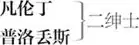

史比德， 凡伦丁之丑角般的奴仆 1
朗斯， 普洛丢斯之仆，与史比德类似 2
米兰公爵， 西尔维娅之父
西尔维娅， 凡伦丁之恋人
爱格勒莫， 助西尔维娅出逃者
安东尼奥， 普洛丢斯之父
潘西诺， 安东尼奥之仆
图里奥， 凡伦丁之愚蠢的情敌
朱利娅， 普洛丢斯之恋人
露西塔， 朱利娅之女仆
旅店主， 朱利娅寄宿之店主
强盗 数人，凡伦丁同伴
仆人、乐师各数人，朗斯的狗克来勃
第一幕
第一场 ／ 第一景
维洛那 3
凡伦丁 别再劝了，我可爱的普洛丢斯，
年轻人恋家自然会约束心智。
若不是你心上人送出的秋波
将你的青春岁月牢牢牵制，
我倒是很想请你与我一起
到国外好好地去开开眼界，
总比──待在家里无所事事──
漫无目的地消磨时光要强。
但已恋爱，那就爱吧，祝你成功！
我若谈起恋爱，可能也不会远行。
普洛丢斯 你要走了？亲爱的凡伦丁，再会！
若在旅途中碰见稀奇的景致，
可不要忘了你的普洛丢斯。
当你交上好运时，要想着让我
与你有福同享：若在危险之中──
假如你的境况危机四伏──
便将悲苦交给我虔诚的祷告，
凡伦丁，我要专门为你祈祷。
凡伦丁 根据一本恋爱经祈祷我成功？
普洛丢斯 根据一本我爱的经为你祷告。
凡伦丁 是关于一段深情的浅薄表露，
普洛丢斯 那则故事很深沉，但爱情更深，
因为他爱的深度已没过鞋子。
凡伦丁 没错，你爱的深度已没过靴子，
但你却从未游过赫勒斯滂。
普洛丢斯 没过了靴子？你别取笑我了。
凡伦丁 我不取笑，因为那对你无益。
普洛丢斯 无益？
凡伦丁 坠入爱河，以呻吟换取鄙视，
以哀伤换取轻蔑，二十个消沉、
冗长的不眠之夜换取片刻欢欣；
若追求成功，结果也许会不幸，
若追求失败，那便是白费辛苦；
无论如何，不是理智变为愚蠢，
那就是愚蠢会将理智征服。
普洛丢斯 照你说来，我是个傻瓜而已。
凡伦丁 根据你的状况，恐怕不会冤枉。
普洛丢斯 你是对爱情不满，我又不是爱神。
凡伦丁 你是爱神的奴隶，他是你主人；
对一个甘受痴情左右者来说，
我想他不该被列为明智之人。
普洛丢斯 然作家说过：最为鲜嫩的蓓蕾
易有蛀虫，最为聪敏的心灵
才会栖息令人伤心的爱情。
凡伦丁 作家也说过：犹如早春的花蕾
在绽放之前便遭尺蠖叮咬，
年青稚嫩的心智会被爱情
腐蚀，含苞待放便已凋零，
绿意盎然的时节失去生机，
致使远大的前程个个落空。
既然你已对爱情痴迷不悟，
我为何还要对你白费口舌？
再会吧！再会吧！家父已到码头，
正等我过去，他要送我上船。
普洛丢斯 我陪你去码头那边，凡伦丁。
凡伦丁 不用了，好普洛丢斯，咱们告辞吧。
你要写信到米兰 8 告诉我你的
恋爱结果，以及你朋友离开
之后有关家乡的各种见闻。
我也会写信给你通报音信。
普洛丢斯 祝你在米兰能够幸福平安！
凡伦丁 也祝你在家幸福平安！好吧，再见。
下
普洛丢斯 他在追求荣誉，我在追求爱情；
他离开亲友使亲友更为光荣 9 ；
我抛弃自己、亲友和一切，为了爱情。
使我荒废了学业，浪费了光阴。
拒绝良言相劝，认定世事无用；
因沉思而弱智，因抑郁而伤心。
［史比德 12 上］
史比德 普洛丢斯先生，上帝保佑！可看到我的主人？ 13
普洛丢斯 他刚刚离开这里，乘船前往米兰。
史比德 那么十之八九，他已经上了船，
找不到他，我就成了迷途的羔羊 14 。
普洛丢斯 没错，假如牧者片刻不在，
羔羊往往就会趁机溜开。
史比德 你是说我的主人是牧者，而我是羔羊？
普洛丢斯 是的。
史比德 这么说，我的角就是他的角， 15 不管我醒着还是睡着。
普洛丢斯 好愚蠢的回答，很适合羊的身份。
史比德 这依然证明我是羊。
普洛丢斯 没错，你的主人是牧者。
史比德 不对，我能提出证据加以否认。
普洛丢斯 你就是换个角度我也能证明。
史比德 是牧羊人找羊，不是羊找牧羊人；而我是在找我的主人，不是我的主人在找我。因此我不是羊。
普洛丢斯 羊为了草料而跟随牧羊人，但牧羊人不用为了饭菜而跟随羊；你为了工钱而跟随你主人，可你的主人不用为了工钱而跟随你。因此你是羊。
史比德 你再举例子，我可真要叫“咩” 16 了。
普洛丢斯 我要问你，我的信你给朱利娅了吗？ 17
史比德 给了，先生。我，一只迷途的羊，把你的信给了她，一只卖春的羊 18 ；她这只卖春的羊却让我这只迷途的羊白跑一趟。
普洛丢斯 这牧场太小了，可容不下这么多的羊。
史比德 如果地方太挤，你最好把她戳死 19 。
普洛丢斯 唉，这回你又迷途了：最好把你给圈住 20 。
史比德 用不着，先生，我给你送信可不值一镑。
普洛丢斯 你弄错了，我是说兽栏——就是畜栏 21 。
史比德 从一镑降到了几钱？就是翻上几番，都不够给你情人送信的赏钱。
普洛丢斯 她怎么说呢？
史比德 对的。
点头
普洛丢斯 点头——对的——嗨，那就是癫头癫脑 22 。
史比德 你误会了，先生。我是说她点头了，你问我她点没点头，我才说“对的”。
普洛丢斯 把它们连起来就是癫头癫脑。
史比德 既然你已费心把它们连了起来，那就算对你的奖赏吧。
普洛丢斯 不，不，你为我送了信，应该奖给你。
史比德 唉，我觉得我必须为你忍辱负重。
普洛丢斯 嗨，你怎么为我忍辱负重？
史比德 天哪，先生，我把信件乖乖地送到，回报只是“癫头癫脑”。
普洛丢斯 我该死，你可是才思敏捷。
史比德 可它还赶不上你迟缓的钱包。
普洛丢斯 快，快，把话匣打开，她都说啥？
史比德 把你的钱包打开，好让咱们一边交钱，一边交话。
普洛丢斯 好吧，老兄，这是你的辛苦费。她怎么说？
递过一硬币
史比德 说真的，先生，我看你很难追到她的。
看看硬币，略显轻蔑
普洛丢斯 为啥？你能从她身上看出这些？
史比德 先生，我从她那里看不出什么；把你的信送过去，连枚金币的影儿都不见。我替你传情达意，她尚且这么刻薄，恐怕你向她当面表白时，也不会有啥改观。你给她金石作信物好了，因为她是铁石心肠。
普洛丢斯 怎么，她啥都没说？
史比德 没说，就连“给你点辛苦费”都没说。为了表明你的慷慨，我谢谢你，你给了我六个便士 23 ；为了答谢你的好意，以后你自己去送吧。好了，先生，我会替你向我主人致意。
普洛丢斯 滚，滚，滚吧，船上若有了你，
［史比德下］
肯定不会沉没，因为你命中
已注定要在岸上被人绞死。
我必须委派一位更好的信差；
用这么一个废物送去的情书，
恐怕我的朱利娅会不屑一顾。 24
下
第二场 25 ／ 第二景
朱利娅与露西塔 26 上
朱利娅 你说，露西塔——现在也没有别人——
你建议我去和人家恋爱吗？
露西塔 是的，小姐，只要你不是急不可耐。
朱利娅 每天都有成群结队的绅士
前来和我攀谈，在你看来，
他们中间有谁最值得爱恋？
露西塔 请重复一下名字，我将根据
自己粗浅的见识发表意见。
朱利娅 你看白净的爱格勒莫 27 爵士怎样？
露西塔 他倒是能言善辩、整洁文雅，
不过，假如我是你，肯定不选他。
朱利娅 你对富有的莫凯西奥 28 怎么看？
露西塔 他财产可观，但是人品一般。
朱利娅 你看尊贵的普洛丢斯如何？
露西塔 主啊，主啊！你看我多么愚拙！
朱利娅 怎么了？一提他你怎的这么动情？
露西塔 原谅我，小姐！真让我无地自容：
像我——这么一个卑贱的奴仆——
竟对高贵的绅士评头论足。
朱利娅 为何只对普洛丢斯不作评论？
露西塔 因为：众多好男人中他最超群。
朱利娅 有何理由？
露西塔 没啥理由，只是女人的感受；
我觉得他最好，这就是理由。
朱利娅 那你愿意我把爱献给他吗？
露西塔 愿意，你若是不想浪费爱情。
朱利娅 那为何只有他未曾向我求婚。
露西塔 所有追求者中他却最为真心。
朱利娅 他寡言少语说明情义淡薄。
露西塔 悉心看护的火苗烧得最好。 29
朱利娅 若没有表白那就不能算真爱。
露西塔 噢，爱张扬爱情的人最没情怀。
朱利娅 但愿我知道他的心思！
露西塔 看看这封信吧，小姐。
递过一信
朱利娅 “致朱利娅”。是谁写的？
露西塔 你看看就知道了。
朱利娅 快说，快说，谁给你的？
露西塔 凡伦丁先生的侍童，我想是普洛丢斯写的。
他本想交给你本人，可我，碰巧遇见了他，
就以你的名义收下了。请原谅我的过错。
朱利娅 我现以贞节起誓，好一个媒婆！
你竟敢擅自收受下流的情书？
与人家密谋来败坏我的芳名？
相信我，这可是了不起的职位，
对你来说这种职位恰如其分。
得啦，把信拿去，物归原主，
否则你就再也别来见我。
露西塔 帮人求爱，没有报酬反遭憎恨。
朱利娅 你还不滚开？
露西塔 正好你可以反思。
下
朱利娅 可我真希望自己已把信看过；
把她叫回来，求她再犯一次
我责备过的错误，真不好意思。
她也太傻，明知我是个姑娘，
怎么不把信塞给我看一看呢！
因为害羞的姑娘尽管说“不”，
心里却希望对方理解为“是”。
呸，呸！这种痴情多么任性，
——像个暴躁的婴孩——抓挠乳母，
可一经责罚，立刻便俯首帖耳！
我如此粗暴地把露西塔撵走，
实际上却想让她待在这里！
我是多么愤怒地双眉紧皱，
内在的喜悦却使我心花怒放！
我的悔过就是叫露西塔回来，
求她原谅我刚才所做的愚行。
喂！露西塔！
［露西塔上］
露西塔 小姐您有啥吩咐？
朱利娅 快到晚饭时间了吗？
露西塔 但愿到了，
好让你的胃气撒在肉上 30 ，
而不是奴仆身上。
丢下一信，接着捡起
朱利娅 你小心翼翼捡起来的是啥？
露西塔 没啥。
朱利娅 那你为啥要弯腰？
露西塔 把我刚才掉落的信捡了起来。
朱利娅 难道信不是啥吗？
露西塔 它跟我无关。
朱利娅 那就让它躺着，留给相关的人呗。
露西塔 小姐，关切的地方，它不会撒谎 31 ，
除非它的读者不可信赖。
朱利娅 是你的情人给你写的押韵诗吧。
露西塔 您定个调，小姐，也许我会唱呢，
给我谱上曲吧：小姐您会谱写——
朱利娅 这些个琐碎的事情不配谱写，
最好按照《薄情女》 32 的调子唱吧。
露西塔 太沉重，不适用这么轻薄的曲调。
朱利娅 沉重？也许负载着低沉的副歌 33 ？
露西塔 是的，要是你来唱，肯定很动听。
朱利娅 你怎么不唱？
露西塔 我攀不了那么高。 34
朱利娅 我看看你的情歌。
接过信
怎么，贱货！
露西塔 你可不要变调，就那样唱完。
这个调子我可不怎么喜欢。
朱利娅 你不喜欢？
露西塔 是的，小姐，有些太尖 35 。
朱利娅 你这贱货，太过轻佻。
露西塔 不，是你调子太平，
用难听的伴唱破坏了和谐，
你需要一位高音 36 插入其中。
朱利娅 高音被你放肆的低音淹没了。 37
露西塔 是的，我自作多情，想代普洛丢斯。
朱利娅 别再用这种胡言乱语烦扰我。
这只是对爱的表白小题大做！
撕信
出去，快出去，纸片就丢在这里 38 。
你只会翻弄它们惹我生气。
露西塔 她假装漠不关心，然而再来
一封让她生气她才最为高兴。
［下］
朱利娅 不，但愿信能复原，好让我假怒。 39
噢，可恨的爪子，竟撕碎情书； 40
你这无耻的黄蜂 41 ，吮吸了甜蜜，
随后再把酿蜜的蜜蜂害死！
为了悔过，我要亲吻每片碎纸。
你看，这里写着“善良的朱利娅”。
↓察看纸片↓
刻薄的朱利娅，要报复你的薄情，
把你的名字投向尖硬的石头，
我让你遭受蹂躏、遭受鄙视。
这里写着“为爱负伤的普洛丢斯”。
可怜的受伤名字：我要把你
放在我的心窝，直到你能痊愈；
用奇妙的亲吻把你的伤口抚慰。
“普洛丢斯”在此出现了两三次。
风儿，慢点吹，一个字也不能吹走，
直到我把全部字词在信中找到，
除了我的名字：让旋风将它
吹向那嶙峋恐怖的悬崖峭壁，
然后再把它抛入汹涌的大海。
你看，他的名字一行中出现两次：
“可怜的普洛丢斯，痴情的普洛丢斯，
致可爱的朱利娅”。我要把它撕去；
可又不想撕，因为他将我与哀怨的
普洛丢斯如此巧妙地合在一起。
我这样一折，让它们上下合一；
你们亲吧，抱吧，斗吧，率性而为吧。
［露西塔上］
露西塔 小姐，晚饭好了，你父亲在等候。
朱利娅 好吧，咱们走。
露西塔 唉，让纸片留在地上好泄密吗？
朱利娅 你若重视它们，最好捡起来吧。
露西塔 不，我刚才还因丢下它们挨骂。
可它们不能躺在这里，恐怕受凉。
捡起纸片
朱利娅 我看你对它们倒挺感兴趣。
露西塔 是的，小姐，你也许会看到很多；
我也会的，尽管你以为我是瞎子。
朱利娅 得啦，得啦！咱们走吧？
同下
第三场 42 ／ 第三景
安东尼奥与潘西诺上
安东尼奥 告诉我，潘西诺，你在走廊里
跟我兄弟谈了什么正经事儿？
潘西诺 关于他侄子，普洛丢斯，您的儿。
安东尼奥 为啥？谈他什么？
潘西诺 他感到不解的是老爷您为何
会让他在家消磨青春年华，
而其他人家，尽管名望逊色，
却把子弟送出去寻找机遇：
有的走向战场去碰碰运气，
有的前去探索远方的岛屿，
有的进了大学去勤学苦练。 43
他说就上述各种行动而言，
您的儿子普洛丢斯都很适宜，
他还郑重地请我加以督促，
叫您别让他继续待在家里，
因为年轻时没有外出旅行 44 ，
成年后将会对他有害无益。
安东尼奥 这件事情不用你怎么催促，
这个月我一直在就此沉思。
我很清楚他正在光阴虚度，
若不在世上经受考验和训导，
这样下去他不可能完美无缺。
因为经验要通过勤勉而获取，
要在时间的长河中得以完善。
告诉我，最好把他送往哪里？
潘西诺 我在想，老爷您不会不知道，
他的一位伙伴，年轻的凡伦丁，
目前正在皇帝 45 的宫中当差。
安东尼奥 我知道这事儿。
潘西诺 我想您把他送到那里会很好。
那里能练习马上比枪和比武， 46
倾听雅言高论，能与贵人交流，
可以目睹各种各样的活动，
完全适宜他的青春和出身。
安东尼奥 我喜欢你的劝告，你说得很对。
我对你的主意是如何地赞赏，
将由我的具体行动予以展示。
我将会采用最为快捷的速度，
将他派遣到皇帝的宫廷之中。
潘西诺 明天，若老爷您高兴，阿尔方索，
与其他几位德高望重的人一起，
将会启程前去向皇帝致意，
并听从皇帝陛下的随意差遣。
安东尼奥 好旅伴，普洛丢斯将与他们同行。
［普洛丢斯读信上］
来得正好！这就向他讲明此事。
普洛丢斯 甜蜜爱情，甜蜜诗行，甜蜜人生！
这是她的亲笔，真心之流露；
这是她的誓言，忠贞之保证。
噢，愿我们的父亲赞成我们恋爱，
以便能让我们两人美满幸福。
噢，天仙般的朱利娅！
安东尼奥 怎么回事？你在读什么信件？
普洛丢斯 禀报父亲大人，这只是凡伦丁
写来的一封三言两语的问候，
由他那里来的一位朋友捎来。 47
安东尼奥 让我看看信，看看有啥消息。
普洛丢斯 没啥消息，父亲，他只是在说
他的生活是多么愉快，每天
都会得到皇帝的喜爱和优待，
希望我能一起，与他共享幸遇。
安东尼奥 那你对他的愿望意向如何？
普洛丢斯 这要看父亲大人您的意愿，
而不是看朋友凡伦丁的愿望。
安东尼奥 我的意愿跟凡伦丁颇为一致。
我这样突然决定你不必吃惊，
因为我想怎么样，就会怎么样。
我已决定你将与凡伦丁一起
在皇帝的宫中度过一些时日；
他从亲友那里得到多少费用，
我也会为你提供多少费用。
明天你就做好启程的准备，
不要推托，因为我已作了决定。
普洛丢斯 父亲，我无法这么快准备就绪，
请您考虑再延缓一日两日。
安东尼奥 你所需要的物品将随后寄送。
别再提拖延，明天你必须动身。
快，潘西诺，你也要行动起来，
以便督促他能够快速启程。
［安东尼奥与潘西诺下］
普洛丢斯 就这样因怕烧身躲过了烈火，
反而跳进了大海惨遭灭顶。
不敢向父亲展示朱利娅的信函，
生怕他反对我跟朱利娅恋爱，
而我加以推托的好处却是，
他对我的恋爱设置了极大障碍。
噢，这种爱情的萌动多么像
绚丽多彩、变化无常的四月天，
此时此刻到处是阳光明媚，
顷刻之间便会被乌云遮掩。
［潘西诺上］
潘西诺 普洛丢斯先生，您父亲在叫您：
他很急迫，因此我请您快去。
普洛丢斯 唉，实情是：我心里答应去那里，
而它的回答却是一千个“不愿意”。 48
同下
第二幕
第一场 ／ 第四景
米兰
凡伦丁［与］史比德上
史比德 先生，您的手套。
凡伦丁 不是我的，我的手套在手上。
史比德 哎呀，也许是您的，因为只有一只。
凡伦丁 哈！让我看看，给我，就是我的。
可爱的点缀使物品变得神奇。
啊，西尔维娅 49 ，西尔维娅！
史比德 西尔维娅小姐！西尔维娅小姐！
呼唤
凡伦丁 怎么了，老兄？
史比德 她离您很远，听不见，先生。
凡伦丁 咳，老兄，谁让你喊她了？
史比德 阁下您，先生，否则我弄错了。
凡伦丁 唉，你总是那么鲁莽。
史比德 可上一次您却骂我太慢。
凡伦丁 得啦，老兄，告诉我，你认识西尔维娅小姐吗？
史比德 阁下您所爱上的那位？
凡伦丁 嗨，你怎么知道我在恋爱？
史比德 真是的，根据这些特殊的迹象呗：首先，您像普洛丢斯先生一样，学会了双臂紧抱 50 ，好像不满现状似的；哼唱情歌，好像一只知更鸟似的 51 ；独自徘徊，好像患了瘟疫似的；唉声叹气，好像小学生丢了识字课本似的；哭哭啼啼，好像一位村姑刚刚为祖母送了丧似的 52 ；茶饭不思，好像是在节食似的；整夜不睡，好像是在担心会有盗贼似的；说起话来带有哭腔，好像是万圣节的乞丐似的 53 。可您从前笑起来，犹如雄鸡啼鸣；走起路来，犹如一头雄狮；您茶饭不思时，是刚刚吃过晚饭；您面带愁容时，是因为已经缺钱。可现在您却让情人给弄得判若两人，我看见您，几乎不敢相信您就是我的主人。 54
凡伦丁 你能在我身上看出这一切？
史比德 从您的外表 55 可看出一切。
凡伦丁 我不在场？那不可能。
史比德 您的外表？那是当然；因为您要不是那么愚钝，没人能看出。然而您是如此愚钝，即便是没有这些愚蠢的外表，您内在的愚蠢也会显露无遗，就像玻璃瓶里待检的尿液，凡是能看见这些迹象的人，都会像大夫一样判断您的病症 56 。
凡伦丁 你告诉我，你可认识我的西尔维娅小姐？
史比德 就是她吃饭时你盯着看的那位？
凡伦丁 那你都看到了？我说的就是她。
史比德 嗨，先生，我不认识她。
凡伦丁 你知道我盯着看的是她，但你不认识她吗？
史比德 她长得不是很难看吗，先生？
凡伦丁 与其说漂亮，伙计，不如说可爱。
史比德 这一点我很清楚，先生。
凡伦丁 你清楚什么？
史比德 她长得不怎么漂亮，可你就是爱她。
凡伦丁 我是说她的美貌非凡，但是她的魅力无限。
史比德 因为前者可以涂脂抹粉，而后者无法估算。
凡伦丁 怎么涂脂抹粉？怎么无法估算？
史比德 嗨，先生，她浓妆艳抹以显得漂亮，结果没人看重她的美了。
凡伦丁 那你不考虑我的观点吗？我认为她很美。
史比德 她的真相已在你眼里扭曲。
凡伦丁 她已扭曲了多久？
史比德 自从你爱上她以后。 57
凡伦丁 我对她简直是一见钟情，我依然觉得她很美。
史比德 你要是爱她，你就看不见她。
凡伦丁 为什么？
史比德 因为爱情是盲目的。噢，愿你能有我的眼睛，或者你自己的眼睛能像你责备普洛丢斯先生忘系袜带 58 时那样明亮！
凡伦丁 我应该看些啥呢？
史比德 你目前的愚蠢和她出奇的扭曲。因为他，一旦恋爱，就忘了系上自己的袜带，而你，一旦恋爱，就连袜子都顾不上穿了。
凡伦丁 也许吧，伙计，那么你也在恋爱，因为昨天早上你都忘了给我擦鞋。
史比德 不错，先生，我在与我的床恋爱。谢谢你，因为我的恋床你还揍我一顿，所以我现在才敢责备你恋爱。
凡伦丁 总而言之，我一直都挺爱她。 59
史比德 我希望你能消挺，好让你的爱情歇息。
凡伦丁 昨晚她吩咐我给她所爱的一个人写几行情诗。
史比德 你写了吗？
凡伦丁 我写了。
史比德 写得不是很蹩脚吧？
凡伦丁 不蹩脚，伙计。我尽了最大努力。安静！她来了。
史比德 啊，多棒的木偶戏！啊，非凡的木偶 60 ！现在他要为她配音 61 。
旁白
［西尔维娅上］
凡伦丁 小姐和女主人，一千个早安。
史比德 唉，愿上帝给你们晚安：这也太客气了吧。
旁白
西尔维亚 凡伦丁先生和仆人 62 ，祝你两千个早安。
史比德 他应给她付息，她倒给他付了。 63
旁白
凡伦丁 按照您的吩咐，我已为您那位
匿名的情人写好了一封信函；
若不是为了给小姐您效劳，
做这种事情我真是很不情愿。
递给她一信
西尔维亚 谢谢你，温存的仆人。你写得很好。
凡伦丁 相信我，小姐，这封信相当难写：
因为不清楚信是写给谁的，
我只能含糊其辞，随便写写。
西尔维亚 也许你觉得这是小题大做？
凡伦丁 不，小姐，若对您有益，我还会写的——
您尽管吩咐——一千次也在所不辞。
不过——
西尔维娅 圆满的句号！好吧，我猜猜下文，
不过我不想说明；不过我不关心。
不过这信你拿回。不过我谢谢你，
递信给他
意思是从今以后不再麻烦你了。
史比德 不过你还会的，不过再一次“不过” 64 。
旁白
凡伦丁 小姐您是何意？您不喜欢它吗？
西尔维娅 喜欢，喜欢，这信写得非常巧妙，
然而，既然很不情愿，就拿回去吧。
再次递信给他
不，你拿去。
凡伦丁 小姐，信是写给您的。
西尔维娅 是的，是的，是我请你写的，先生，
可我一封也不想要。信是给你的，
希望你能把信写得再动情一些。
凡伦丁 若小姐乐意，我为您再写一封。
西尔维娅 你写完之后，要为我读上一遍，
你若满意，很好；若不满意，也罢。
凡伦丁 如果我很满意，小姐，那又怎样？
西尔维娅 唉，你若满意，就当作对你的酬劳；
好了，再见吧，仆人。
下
史比德 啊，这玩笑不易看穿，简直是个谜，
旁白
我主人追求她，她却教导追求者，
本是她的学生，却变成她的督学。
啊，多棒的策略！谁听说过更好的？
我的主人他，作为代言人，
居然会写出信件给自己？
凡伦丁 怎么了，伙计？你是在跟自己理论吗？
史比德 不是，我在作诗；你才有理由做呢。
凡伦丁 有理由做啥？
史比德 做西尔维娅小姐的代言人。
凡伦丁 给谁？
史比德 给你自己。嗨，她通过计策向你示爱。
凡伦丁 什么计策？
史比德 通过信件，我敢说。
凡伦丁 嗨，她又没写信给我？
史比德 她既然让你写给你自己，还用亲自写吗？嗨，你还没明白这玩笑？
凡伦丁 没有，相信我。
史比德 相信你确实没有，先生。你没看出她很认真 67 ？
凡伦丁 她啥都没给我，除了一句气话。
史比德 嗨，她给了你一封信吧。
凡伦丁 那是我写给她的情人的。
史比德 那封信她已递交，已经没啥可说。
凡伦丁 但愿不会有错。
史比德 我向你保证，情况就是这样：
因为你常常写信给她，她，出于谨慎，
或是因为没有闲暇，不能给你回信，
或是害怕哪位信差泄露了她的心意，
于是便教导她的情人写信给他自己。 68
我说的这些千真万确，白纸黑字。
你为啥出神，先生？该晚饭了。
凡伦丁 我已吃饱。 69
史比德 是的，可你听我说，先生：尽管变色龙爱情能以空气为生， 70 我可是靠食物养活的那种，而且很想吃肉。啊，别像你的小姐那样：体谅我吧，体谅我吧！ 71
同下
第二场 ／ 第五景
维洛那
普洛丢斯［与］朱利娅上
普洛丢斯 要耐心，温情的朱利娅。
朱利娅 没有办法，我只好忍耐。
普洛丢斯 若有可能，我自会回来。
朱利娅 只要你的心不变，很快会返还。
为了你的朱利娅，收下这个吧。
递过一戒指
普洛丢斯 对了，咱们交换一下，你拿上这个。
递过一戒指
朱利娅 咱们用圣洁的一吻确认婚约。
他们亲吻
普洛丢斯 我跟你握手以表忠贞不渝： 72
若有哪天的某个时辰我不曾
为了你朱利娅而唉声叹气，
就让某些天灾人祸在随后的
时辰惩罚我的薄情和忘记。
我父亲正在等待；你不用回答，
现在正涨潮；不，不是你的泪潮，
你的泪潮会使我停留得太久。
朱利娅，再会。怎么，不辞而别？
［朱利娅下］
是的，真爱本应如此：无法言表， 73
真情最好饰以行动，而不是言词。
［潘西诺上］
潘西诺 普洛丢斯先生，大家在等你。
普洛丢斯 去吧，我就来，我就来。
唉，离别使可怜的情人有口难开。
同下
第三场 ／ 第六景
朗斯 74 ［牵着狗克来勃］上
朗斯 唉，我哭了该有一个钟头了吧：我们朗斯全家都有这种毛病。我就像那位才子 75 一样，也继承了一份，现在我要跟着普洛丢斯先生到皇宫里去。我想，克来勃，我的狗，该是世上最尖酸的 76 狗了。我母亲在流泪，我父亲在号啕，我妹妹在哭泣，女仆在哀号，小猫它在抓挠，全家上下乱作一团，而这只无情的狗连一滴泪都没掉；铁石心肠，他简直是一块石头，同情心跟一条狗一样。犹太人见了我们的离别都会落泪。 77 嗨，我的奶奶，双目失明，你看，她告别时都哭瞎了眼睛。我来展示那种情景。这只鞋是我父亲。不，左边这只是父亲，不对，左边这只是母亲。 78 不，那也不对。对，是这样，是这样：它底子更糟 79 。带洞的 80 这一只是母亲，这一只是父亲。该死的，可把你脱掉了。嗳，先生，这棍棒是我妹妹，你看，她白得就像百合花，瘦得像棍子。这顶帽子是女仆。我是狗；不，狗才是他自己，我是狗。啊，狗是我，我是我。是的，是的。现在我就走向父亲。父亲，请您为我祝福；这只鞋该是泣不成声。现在我该亲亲父亲；哎哟，他还在哭。我现在走向母亲。啊，愿她像疯女人那样开口！好，我吻她，嗨，脱掉了；这正是我母亲的气味。现在我再走向妹妹；请注意她的呻吟声 81 。而在此期间这只狗却没掉一滴泪，没说一句话；你看我的泪水都打湿了土地。
［潘西诺上］
潘西诺 朗斯，快走，快走，上船去！你的主人已上船，你赶快坐上划艇去上船。怎么了？你哭啥，老兄？快走，蠢驴，你要是再耽搁，就会错过潮汐。
朗斯 拴着的狗东西 82 就是丢了也没有关系，因为它是人们所能拴住的最无情的东西。
潘西诺 什么最无情的潮汐？
朗斯 嗨，就是拴在这里的克来勃，我的狗。
潘西诺 噫，伙计，我是说你会失去海潮，失去了潮汐，你就会失去航程，失去航程，就会失去主人，失去主人，就会失去差使，失去差使——你为啥让我闭嘴？
朗斯示意其闭嘴
朗斯 因为我怕你失言。
潘西诺 我会在哪里失言？
朗斯 在你言谈 83 里。
潘西诺 在你尾巴里！
朗斯 失去潮汐，失去航程，失去主人，失去差使，还失去狗！嗨，伙计，如果河干了，我能用泪水把它灌满；如果风停了，我能用我的叹气驶船。
潘西诺 快，快走吧，伙计。我是奉命来叫你的。
朗斯 老兄，你叫我啥都行。
潘西诺 还不走吗？
朗斯 走，这就走。
同下
第四场 ／ 第七景
米兰
凡伦丁、西尔维娅、图里奥 84 ［与］史比德上
西尔维娅 仆人！
凡伦丁 主人？
史比德 少爷，图里奥爵士对您怒目而视 85 。
凡伦丁 是的，伙计，那是为了爱。
史比德 不是爱您。
凡伦丁 那就是爱我的主人。
史比德 您应该揍他一顿。
［下］
西尔维娅 仆人，你很忧伤。
凡伦丁 是的，小姐，好像是的。
图里奥 你是在装模作样吧？
凡伦丁 也许是的。
图里奥 骗子就是这样。
凡伦丁 你也是这样。
图里奥 那我假装啥了？
凡伦丁 聪明。
图里奥 你有什么具体反证？
凡伦丁 你的愚蠢。
图里奥 你怎么能看出我的愚蠢？
凡伦丁 我根据你的夹克衣。
图里奥 我的夹克衣是件紧身上衣。 86
凡伦丁 那正好，可使你的愚蠢翻倍 87 。
图里奥 什么？
西尔维娅 怎么，生气了，图里奥爵士？你都变色了？
凡伦丁 原谅他，小姐，他是一只变色龙。
图里奥 它宁愿喝你的血，也不想吃你的气 88 。
凡伦丁 你说得好，先生。
图里奥 是的，先生，这一次，还做得到。
凡伦丁 我很清楚，先生，你总会半途而废。
西尔维娅 真是唇枪舌剑，绅士们，万弹齐发。
凡伦丁 没错，小姐，我们感谢向导 89 。
西尔维娅 那是谁呀，仆人？
凡伦丁 您呀，可爱的小姐，是您点的火。图里奥爵士向您的美貌借得了口才，自然会在您面前卖弄一番。
图里奥 先生，如果你要和我费一番口舌，我会让你的口才破产。
凡伦丁 我很清楚，先生，你拥有一座语言宝库，我想，除此之外再没有什么财产付给你的随从，因为他们破旧的衣衫表明他们依赖你的空话为生。
西尔维娅 好了，绅士们，好了。我父亲来了。
［公爵上］
公爵 嗳，西尔维娅女儿，你被重重包围。 90
凡伦丁先生，你的父亲身体健康；
你的朋友带来了许多佳音，
你觉得怎样？
凡伦丁 我的殿下，对每位带来佳音的
使者，我都会感激。
公爵 认识你的同乡安东尼奥先生吗？
凡伦丁 是的，好殿下，我认识那位绅士，
他家产殷实并且令人敬重，
他有这么好的声望，名副其实。
公爵 他是否有个儿子？
凡伦丁 是的，我的好殿下，完全配得上
这样一位父亲的声望和器重。
公爵 你很了解他吗？
凡伦丁 我了解他就像我了解自己，
我们从小一起谈心、一起长大，
尽管我自己曾经是游手好闲，
未能利用自己的青春年华
将我点缀成天使一般完美，
而普洛丢斯先生——那是他的名字——
却充分利用了他的大好时光：
尽管年纪轻轻，却是经验丰富，
尽管涉世未深，但是见解成熟，
总而言之——我的这些溢美之词
远不能表达他的诸多长处——
他可是才貌双全、完美无缺，
一位绅士的优点他一应俱全。
公爵 哎哟，先生，他若是如此之好，
那就配得上一位皇后的爱恋，
适合充任一位皇帝的顾问。
好了，先生，这位绅士已带着
位高权重者的举荐来到这里，
他打算在此度过一段时光：
我想这种消息你可能爱听。
凡伦丁 假如我有啥期盼，那就是他了。
公爵 那就按照他的优点欢迎他吧。
西尔维娅，你听好了，还有你，图里奥，
至于凡伦丁，不用就此敦促他。
我立即派人叫他来见你们。
［下］
凡伦丁 我向小姐提及的就是这位绅士，
若不是他情人那晶莹的目光
将其双眼锁住，便会与我同行。
西尔维娅 既然她已将他的双眼释放，
也许有利于它们移情别恋。
凡伦丁 不可能，我想她还囚禁着它们。
西尔维娅 那他就会双目失明，如果失明，
他又怎能远道而来到此找你？
凡伦丁 嗨，小姐，爱神拥有二十双眼睛。
图里奥 据说爱情连一只眼睛也没有。
凡伦丁 若是看一位相貌平平的情人，
就像图里奥你，爱神无需睁眼。
西尔维娅 好了，好了：这位绅士已经来了。
［图里奥可下］
［普洛丢斯上］
凡伦丁 欢迎，亲爱的普洛丢斯！主人，我求您，
要用特殊的款待对他表示欢迎。
西尔维娅 他的优点可保证他会受欢迎，
若他是你常想听到音信的那位。
凡伦丁 主人，正是。亲爱的小姐，请您
接受他与我一起做您的仆人。
西尔维娅 这卑贱主人不配这么高贵仆人。
普洛丢斯 不，亲爱的小姐，我这卑贱奴仆
不配您这位高贵主人的一顾。
凡伦丁 请你们都别再自惭形秽了。
好小姐，接受他做您的仆人吧。
普洛丢斯 能为您效劳，我很荣幸，别无他求。
西尔维娅 尽心尽责总是少不了报偿。
仆人，欢迎你侍奉卑贱的主人。
普洛丢斯 除了您，谁这样说我就跟谁拼命。
西尔维娅 说欢迎你？
普洛丢斯 说您卑贱。
［图里奥上，或一仆人上并对图里奥耳语］
图里奥 小姐，您的父亲殿下，要和您说话。
西尔维娅 我会遵命的。来吧，图里奥爵士，
跟我走吧。再说一遍，新仆人，欢迎。
我让你们谈一谈家乡的事情；
你们谈完之后，再跟我们交流。
普洛丢斯 我们两人都很愿意侍奉小姐。
［西尔维娅与图里奥下］
凡伦丁 嗳，告诉我：家乡的一切还好吗？
普洛丢斯 你的亲友很好并向你致意。
凡伦丁 你的亲友呢？
普洛丢斯 他们也都很好。
凡伦丁 你的小姐怎样？你们的爱情如何？
普洛丢斯 我的恋爱故事向来让你厌倦，
我知道你不会喜欢谈及爱情。
凡伦丁 不，普洛丢斯，情况已完全不同，
我对自己曾蔑视爱神表示懊悔，
它的高傲已让我吃尽苦头：
它让我茶饭不思，悔恨呻吟，
它让我白天流泪，夜晚哀叹；
因为想报复我对爱情的轻蔑，
爱神已从我眼中掳走了睡眠，
让我眼巴巴地观望自己的哀怨。
啊，好普洛丢斯，爱神是强大主人，
它已使我羞愧难当，我得承认，
受它惩罚可谓最大的痛苦，
为他服役就是最大的享受。
现在已没什么话题，除了爱情。
只要一提起爱情这个字眼，
我便能一日三餐，安然入睡。
普洛丢斯 够了，你的眼神已透出你的运气。
这一位就是你崇拜的偶像吧？
凡伦丁 正是；难道她不是一位天仙？
普洛丢斯 不是，她只是人间的一位典范。
凡伦丁 要叫她仙女。
普洛丢斯 我不想恭维她。
凡伦丁 啊，恭维我，因为爱情喜欢美言。
普洛丢斯 我患病时，你给我下过苦药，
我现在要以同样的方式待你。
凡伦丁 咱就实话实说；她若不是天仙，
那至少也应该是一位天使 91 ，
主宰着尘世上的所有生灵。
普洛丢斯 我的情人除外。
凡伦丁 亲爱的，没有除外。
除非你对我的情人表示不满。
普洛丢斯 偏爱自己的情人难道没理？
凡伦丁 我也愿意来帮你将她抬举：
有一殊荣给她以抬高其身价，
让她手牵我小姐的裙裾，以免
下贱的泥土偷吻她的衣裙，
如此大的恩宠使它得意忘形，
不许夏天绽放的鲜花生根发芽，
致使严寒的冬季绵绵无期。
普洛丢斯 嗨，凡伦丁，这是何等的吹嘘？
凡伦丁 原谅我，普洛丢斯。与她那杰出的
优点相比，我的话语不值一提。
她无与伦比。
普洛丢斯 那就别提她了。
凡伦丁 绝对不行。嗨，伙计，她是我的，
有了这块瑰宝，就像拥有二十个
大海一样富有，纵然沙粒为珍珠，
海水为玉液，岩石为纯金。
原谅我忘了好好地欢迎你，
你能看出我对情人过分迷恋。
我的愚蠢情敌，受她父亲喜爱——
只是因为他的财力如此雄厚——
已经与她同去，我必须尾随；
因为爱情，你知道，满怀妒忌。
普洛丢斯 可她爱你吗？
凡伦丁 是的，我们已订婚，而且，结婚时间，
以及精心设计好的私奔计划，
已经定好：我如何用一根绳梯
爬向她的窗户，以及为我的幸福
应采取的各种手段已商议妥当。
好普洛丢斯，跟我前往房间，
就此而言你要帮我提提意见。
普洛丢斯 你先去吧，我会找到你的。
我要到码头那边，要从船上
卸下一些我日常所需的物品，
然后我将会立即前去见你。
凡伦丁 你能快一点吗？
普洛丢斯 我会的。
［凡伦丁］下
犹如一团火将另一团火驱除， 92
或像一颗钉子将另一颗敲出，
因此我对往日情人的记忆，
因有更新的目标而模糊不清。
是我的眼睛，还是凡伦丁的赞颂？
是她的十全十美，还是我的背信，
竟使我无端地产生这种逻辑？
她很美丽，我的朱利娅也很美丽——
那是过去，因为我的爱现已消融，
就像一尊蜡像面对于烈火，
原有的印象便会荡然无存。
我对凡伦丁的热情似已冷淡，
因为我已不像从前那样爱他。
啊，可我却太爱太爱他的情人，
那就是我不怎么爱他的原因。
我现在稀里糊涂地开始爱她，
相知更深时又将如何宠爱？
我所见到的不过是她的外貌，
便使我的理智之光一片昏花；
日后我观看她的内在品格时，
将会毫无疑问地丧失视觉。
我要克制这种错误的爱情；
若不能，就要设法将她搞定。
下
第五场 ／ 第八景
史比德与朗斯［分头］上［，朗斯带着狗克来勃］
史比德 朗斯，我以真诚起誓，欢迎来到帕多瓦 93 。
朗斯 不要虚情假意了，可爱的青年，因为我不受欢迎。我总觉得，一个人只有在吊死之后才算毙命，同样也只有在他付过旅费，老板娘说声“欢迎！”之后，才算真正的欢迎。
史比德 走吧，你这个笨蛋，我现在就领你去酒馆，在那里，你花上五个便士，你就会得到五千个欢迎。可是，伙计，你的主人是怎么跟朱利娅小姐辞别的？
朗斯 哎呀，他们真挚地相拥之后，便轻松愉快地分手了。
史比德 她会嫁给他吗？
朗斯 不会。
史比德 怎么回事？他是否会娶她？
朗斯 也不会。
史比德 怎么，他们俩崩了？
朗斯 没有，他们俩都毫发未损。
史比德 怎么了，他们俩到底咋样？
朗斯 哎呀，是这样的：如果他能挺好，她也会挺好。 94
史比德 你真是一头蠢驴！我不懂你的意思。
朗斯 你真是死脑筋，你竟然不懂！我的棍棒都能。
史比德 能懂你的话？
朗斯 是的，还有我的动作呢，你看，我这么一靠，我的棍棒就支到 95 我了。
史比德 它支到你了，没错。
朗斯 嗨，“支到”与“知道”竟是一回事。
史比德 说实在的，他们俩般配吗？
朗斯 问我的狗吧：他若说“是”，能成。他若说“不”，能成。他若摇摇尾巴啥都不说，能成。
史比德 那么结论就是，能成。
朗斯 你只有通过寓言才能从我这里得到这一秘密。
史比德 这样能懂也就行了。不过，朗斯，你怎么看我的主人他已变成了情种？
朗斯 他本来就是这样啊。
史比德 本来怎样？
朗斯 一个大笨蛋，正像你刚才说的那样。
史比德 嗨，你这个狗杂种，你给我弄错了。
朗斯 嗨，傻瓜，我不是说你，我是说你主人。
史比德 我告诉你，我的主人已成了热恋者。
朗斯 嗨，我告诉你，哪怕他让爱烧死 96 我也不管。如果你愿意，就跟我到酒馆去；若不愿意，你就是个希伯来人，是个犹太人，不配称为基督徒。
史比德 为啥？
朗斯 因为你连请一位基督徒到酒馆 97 喝杯酒的爱心都没有。你去不去？
史比德 我听你的。
同下
第六场 98 ／ 第九景
普洛丢斯独自上
普洛丢斯 抛弃我的朱利娅，我是否背誓？
爱上美丽的西尔维亚，是否背誓？
欺骗我的朋友，则是更大的背誓。
正是当初让我海誓山盟的爱情，
唆使我犯下这种三重的背誓。
爱情让我发誓，爱情又让我背誓；
啊，诱人的爱情，你若已犯下罪过，
教教我，受你诱导的臣民，如何开脱。
最初我曾爱慕过一颗明星，
现在我却崇拜着天上的太阳。
粗心的誓言可被精心地打破，
若是缺乏决心教导自己的
理智以糟易好，就是缺乏理智。
呸，呸，无耻的舌头，称她为糟，
她的威仪曾使你接二连三地
发出了两万个由衷的誓言。
我不能停止爱她，可我已经停止，
对我本该爱的对象反而绝情。
要失去朱利娅，要失去凡伦丁，
若保留他们，我定会失去自己。
若失去他们，我就能找到自己：
我替凡伦丁，西尔维娅替朱利娅。
我对自己总比对朋友更近些，
因为爱情本身总是最宝贵的，
西尔维娅——她可是天生丽质——
朱利娅一比只是黝黑的埃塞妞 99 。
我会忘记朱利娅还依然活着，
记住我对她的爱已不复存在。
至于凡伦丁，将其视为仇敌，
旨在能与西尔维娅更为亲密。
现在若不用行动背叛凡伦丁，
便不能证明我对自己忠诚。
今晚他打算利用一根绳梯，
爬向仙女西尔维娅的窗户，
作为他的心腹我参与了密谋。
现在我就去向她父亲通报
他们乔装打扮和预谋的私奔，
他定会勃然大怒，驱逐凡伦丁，
因为他有意让女儿嫁给图里奥。
可凡伦丁一旦离去，我会迅速
用计挫败傻瓜图里奥的愚行。
爱神，既已给我智慧想出妙方，
快给我翅膀让我如愿以偿。
第七场 ／ 第十景
维洛那
朱利娅与露西塔上
朱利娅 告诉我，露西塔，好姑娘，帮帮我，
出于仁慈的爱心，我恳求你，
对我来说你就是一块石板，
我的思想都清晰地刻在上面，
请教导我，告诉我一些良方，
我将如何不失体面地启程，
前去探望我亲爱的普洛丢斯。
露西塔 唉，这旅途颇为艰辛又漫长。
朱利娅 真诚的朝圣客会用他孱弱的
脚步跨国越界而毫无倦态；
更何况她有爱的翅膀可飞翔，
并且是飞往如此可爱、神圣、
完美的普洛丢斯先生身旁。
露西塔 耐心等待普洛丢斯返回会更好。
朱利娅 你不知道他的目光是我的灵粮？
你要可怜我所遭受的饥荒，
那种食粮我已渴望得如此久长。
你若知道爱情在心中的滋味，
你便会用霜雪去点燃烈火，
不会用言辞将爱的火焰扑灭。
露西塔 我并不想扑灭你的爱情火焰，
只想让肆虐的烈火得以缓和，
恐怕它将理智的防线烧穿。
朱利娅 你若加以阻止，就是火上浇油。
那潺潺流淌的溪水，你可知道，
若是受到阻碍，便会肆意泛滥；
要是它的水流能够畅通无阻，
便与光滑的石头奏出美妙乐章，
对每一根能在朝圣的旅途
之上相遇的莎草轻轻一吻，
怡然自得地到处漫游蜿蜒，
最终汇入辽阔无垠的海洋。
就让我去吧，不要阻拦我了。
我会像徐缓的小溪那样安详，
将疲倦的脚步视为一种消遣，
直到最后一步来到恋人身旁，
我将在那里安息，就像一个
幸运的灵魂历经磨难到达天堂。
露西塔 可你此行将穿啥样的服装？
朱利娅 不能像个女的，因为我很想
避免那些好色之徒与我搭讪。
好露西塔，你为我准备几套
适合于体面侍童穿戴的服装。
露西塔 那样的话，小姐就要剪掉头发。
朱利娅 不，姑娘，我要用丝线将它扎起，
结成二十个精心制作的情结。
打扮得奇形怪状，也许会使我
看上去更像一位老成的青年。
露西塔 那你要穿啥样的马裤，小姐？
朱利娅 这就等于说“告诉我，好先生，
您要穿着多大腰围的环裙？”
嗨，你喜爱的款式都行，露西塔。
露西塔 你的裤裆前必须配上吊袋 100 ，小姐？
朱利娅 呸，呸，露西塔！那会很难看的。
露西塔 齐腰短裤，小姐，现在一钱不值，
除非你在它上面缀上吊袋。
朱利娅 露西塔，既然你爱我，就为我配备
你觉得合适和雅观的服饰吧。
但告诉我，姑娘，我作这样一种
厚颜的旅行，世人将怎样看我？
恐怕我会受到人们的耻笑。
露西塔 你若这样想，那就待在家里别去。
朱利娅 不，那可不行。
露西塔 那就别怕名声不好，去就是了。
若普洛丢斯喜欢你的远道而来，
你走后谁若不快都没关系。
恐怕他很难就此感到开心。
朱利娅 我最不用担心这一点，露西塔。
他的汪洋泪海，成千的誓言，
还有他无穷无尽的爱情例证，
保证我的到来会受他欢迎。
露西塔 这些都是花心男子的手段。
朱利娅 卑鄙的男子才会别有用心。
可普洛丢斯生来就有诚意。
他的话是契约，他的誓言是神谕，
他的爱情真挚，他的思想纯洁，
他的眼泪出自于他的衷心，
他的心，与欺骗犹如天壤之别。
露西塔 但愿你见到他时他能如此。
朱利娅 假如你爱我，就不要冤枉他了，
对他的真诚抱有糟糕的看法。 101
你只有通过爱他才值得我爱，
马上就与我一起到我房间，
帮我看看还需要什么物品，
为我这次渴望之旅做好准备。
我拥有的一切将由你掌管，
我的东西，我的土地，我的声誉。
唯一的回报就是，快让我上路。
快来，不用回答，立刻照办去吧。
任何的拖延都会使我厌烦。
同下
第三幕
第一场 ／ 第十一景
米兰
公爵、图里奥［与］普洛丢斯上
公爵 图里奥爵士，请你回避一下，
我们俩有件私事需要商议。
［图里奥下］
告诉我吧，普洛丢斯，你想说啥？
普洛丢斯 仁慈的殿下，我要透露的事情，
若按友情之道我本该闭嘴，
可是当我想起殿下所赐予
我的恩惠——尽管我自己不配——
我的本分使我不得不吐露，
否则任何财富都无法使我开口。 102
尊贵的殿下，我的朋友凡伦丁，
打算今晚就把您的女儿劫走；
我本人就是私下知情的一员。
我知道您已决定将她许配给
图里奥，但您温存的女儿恨他，
假如她让人从您身边劫走，
对年长的您来说会非常苦恼。
因此，出于我的本分，我宁愿
阻挠我朋友拟议中的图谋，
而不愿意隐瞒，将无尽的悲苦
压到您头上，因为猝不及防，
可能承受不起，从而过早伤亡。
公爵 普洛丢斯，谢谢你真诚的关心，
作为报答，有生之年我悉听君便。
他们俩的相爱我也经常看见，
尽管他们觉得我熟睡不知，
我时常试图加以阻止，不让
凡伦丁接近她或是来到宫中。
可因为害怕我的猜忌会出错，
从而冤枉了好人，使他蒙羞——
我向来都会避免这种轻率——
我对他慈眉善目，试图借此
发现你刚才向我透露的事实。
也许你能看出我为此事担忧，
因为我知道年轻人易受诱惑，
晚上就让她睡在塔楼的顶层，
门房的钥匙由我一人掌握，
因此她无法被人偷偷带走。
普洛丢斯 尊贵的殿下，他们已想出办法，
他将如何攀登到她的窗口，
然后用一根绳梯将她接下。
这位年轻的恋人已去拿绳梯，
并且马上就会从这里路过，
如果您愿意，您可将他截住。
不过，我的好殿下，您要做得巧妙，
别让他猜到是我走漏了风声。
是因为爱您，不是恨我朋友，
才使我向您透露了这次图谋。
公爵 我以信誉担保，他绝不会知道
我是从你这里得到的消息。
普洛丢斯 再见了，殿下，凡伦丁先生来了。
［普洛丢斯下］
［凡伦丁上］
公爵 凡伦丁先生，如此匆忙要去何方？
凡伦丁 启禀殿下，有位信差在等我，
要把我写给朋友的信件带走，
我现在要去把信件交托给他。
公爵 是很重要的信吗？
凡伦丁 信的内容只不过是想表明
我在您的宫中过得安康愉快。
公爵 这么说，并不重要。请稍停片刻，
我现在要向你吐露一些事情，
与我休戚相关，你可要保密。
你不会不知道我想把我女儿
许配给我的朋友图里奥爵士。
凡伦丁 我知道，殿下，深信这一婚配
将会荣华富贵。而且这位绅士
品德高尚，颇为富有，慷慨大方，
迎娶您的漂亮女儿颇为恰当。
殿下您就不能争取让她爱他？ 103
公爵 不能，相信我，她任性，赌气，倔强，
高傲，偏执，顽固，缺乏孝心，
既不在乎她是我的孩子，
也不把我当作父亲加以敬畏。
我可以告诉你，她的这种傲气，
经过反思，已使我不再爱她，
然而我本打算将我的余生
交由这位孝顺女儿好好赡养，
可我已下定决心再行续娶，
谁愿意要她就把她带走好了。
那就让她的美貌作为嫁妆，
因为她轻视我和我的财物。
凡伦丁 殿下想要我为此做些什么？
公爵 在维洛那 104 这里有一位淑女，
我很喜爱。可她很腼腆和挑剔，
对老汉我的情话不予理睬。
因此我现在很想请教于你——
因为我早已忘了如何求爱，
而且，求爱的时尚也已改变——
你教我以何种方式举手投足，
才能赢得她那明眸的青睐。
凡伦丁 用礼物征服她，假如言辞不行。
沉默的珠宝尽管无息无声，
但比甜言更易将女人心打动。
公爵 可她对我送的礼物不屑一顾。
凡伦丁 女人对醉心的东西常加嘲弄。
再送她一件，千万不要放弃，
最初的轻蔑会使日后更爱惜。
她若愁眉不展，并不是恨你，
而是想得到你更多的爱意。
她若是责骂，并不是让你走开，
因为傻瓜 105 会发疯，若无人理睬。
无论她说什么，你都不能反感，
她说的“你走开”，不是指“滚蛋！”
恭维、称赞、颂扬她们的优美：
并非每一个男人都可谓汉子，
除非能用不烂之舌赢得女子。 108
公爵 可这位小姐已由家人许配给
一位颇有身份的年轻绅士，
已严加看管，不许有男人出现，
因此我无法在白天靠近她。
凡伦丁 那我建议您在夜晚前去见她。
公爵 是的，可房门紧锁，钥匙藏着，
因此我无法在夜晚向她靠近。
凡伦丁 从她的窗户进去那又有何妨？
公爵 她的卧室很高，离地面很远，
高高地悬在空中，谁若是攀爬，
就等于拿自己的生命冒险。
凡伦丁 那就用一根精心制作的绳梯，
配上一对吊钩，抛掷上去，
即可攀到另一位赫洛的高塔 109 ，
假如勇敢的勒安得耳甘冒风险。
公爵 嗳，你是一位出身高贵的绅士，
告诉我哪里可弄到这种梯子？
凡伦丁 您何时要用？请告诉我，先生。
公爵 今晚就用，因为爱情就像儿童，
对能够得到的东西如饥似渴。
凡伦丁 七点前我就把绳梯给您送来。
公爵 你听我说：我要单独去见她。
我如何才能把绳梯运送过去？
凡伦丁 它并不重，殿下，可随身携带，
把它藏在一件披风里就行。
公爵 跟你穿的披风一样长行吗？
凡伦丁 行，我的好殿下。
公爵 就让我看看你的披风，
我要去弄一件一模一样的。
凡伦丁 嗨，只要是件披风就行，殿下。
公爵 看看我穿上披风是否适应？
我求你，让我试试你的披风。
掀开凡伦丁的披风，发现里面
藏着一信和一绳梯
还有信件？给谁的？“致西尔维娅”！
还有适合我采取行动的工具。
这次我要斗胆打开看上一看。
“我的心思夜夜与西尔维娅相伴，
读信
它们 110 是我奴仆，我让它们飞翔。
啊，愿它们的主人能自由往返，
居住在它们徒然占据的地方。
我的心思在你洁白的心房 111 安息，
而我，它们的国王，赶它们前去，
却要诅咒它们竟有这种运气。
因为我自己缺乏奴仆的幸遇。
我诅咒自己，因它们由我差遣，
它们竟住在其主人该住的地点。” 112
给谁的？
“西尔维娅，今晚我就救你出监。”
原来如此：这里还有备好的绳梯。
嗨，法厄同 113 ——你真可谓日神之子——
你是不是企图驾驭天车，
以你的胆大妄为将世界焚毁？
因为星星对你眨眼，就想摘取？ 114
滚，下贱的盗贼，狂妄的奴仆，
把谄笑献给与你匹配的人去，
明白是我的耐心，不是你的功劳，
给你这种特权让你离开此地。
在我赐予你的所有恩惠当中，
尽管已过分，这一项最该感激。
但你若在我的领地流连拖延，
不以时间所能准许给你的
最快速度从我的宫里离去，
向天发誓，我的怒气将远超
我给我女儿或你本人的爱意。
快走！我不想听你徒劳的辩解，
你若爱惜生命，那就赶快走开。
［下］
凡伦丁 与其苟延残喘，何如一死了之？
死去也就是我离开我自己，
西尔维娅是我自己：离开了她，
就是自己离开自己。致命的流亡： 115
看不到西尔维娅，还能有亮光？
西尔维娅不在身旁，还能有喜悦？
除非去想象她就近在咫尺，
将她的完美影像作我的食粮。
除非我夜晚与西尔维娅同在，
否则夜莺便没有婉转歌声。
除非我白天能看见西尔维娅，
否则对我来说就没有白天。
她可是我的精华，要是没有
她那有益的星力 116 将我养育、
照耀、珍惜，我将不复存在。
逃离他的死刑 117 并非死里逃生：
我在此逗留，只不过是等死，
可我一旦离开，便没了生命。 118
［普洛丢斯与朗斯上］
普洛丢斯 快跑，伙计，快跑，把他搜出来。
朗斯 喂，嗬！喂，嗬！ 119
普洛丢斯 你看见啥了？
朗斯 我们要找的那个：他可是一个彻头彻尾的凡伦丁。 120
普洛丢斯 凡伦丁？
凡伦丁 不是。
普洛丢斯 那是谁？他的魂？
凡伦丁 也不是。
普洛丢斯 那是啥？
凡伦丁 虚空。
朗斯 虚空能说话？少爷，要打他吗？
普洛丢斯 你要打谁？
朗斯 虚空。
普洛丢斯 混蛋，不行。
朗斯 嗨，先生，那我就虚打，我求你——
普洛丢斯 伙计，我说不行。朋友凡伦丁，说句话。
凡伦丁 我的耳朵已堵住，听不进佳音，
太多的坏消息已占据它们。
普洛丢斯 那就埋葬我的消息让它们沉寂，
因为它们难听、刺耳和不利。
凡伦丁 西尔维娅死了？
普洛丢斯 没有，凡伦丁。
凡伦丁 对天使西尔维娅，再没有凡伦丁。 121
她是否已将我抛弃？
普洛丢斯 没有，凡伦丁。
凡伦丁 若西尔维娅抛弃我，再没有凡伦丁。
你有啥消息？
朗斯 先生，有一张告示说你已经消亡。
普洛丢斯 说已将你流放——唉，消息是这样——
离开此地，离开西尔维娅和朋友我。
凡伦丁 啊，这种痛苦早已让我吃饱，
再多吃一点将会把我撑死。
西尔维娅是否知道我被流放？
普洛丢斯 知道，知道。她为你这一判决——
因无法更改，所以完全有效——
洒下海量溶化的珍珠，人称泪水，
使之奉献在父亲粗暴的脚下，
她还跪在地上，请求以身代过，
她拧搓双手，如此洁白细嫩，
像是因本次灾难而毫无血色。
然而跪下的双膝，高举的玉手，
唉声叹气，低沉呻吟，泪如泉涌，
都不能将她无情的父亲打动；
凡伦丁，一经逮捕，必须处死。
而且，她的代祷使他颇为恼怒，
当她请求对你加以改判时，
竟命令将她关进坚固的牢房，
并多次威胁要让她待在那里。
凡伦丁 别再说了，除非你下句话的
毒效足以将我的生命葬送。
若能如此，我求你轻声告知，
权当挽歌了却我无尽的哀伤。
普洛丢斯 对无法改变的事情别再哀伤，
要为你伤心的事情想想办法：
时间是所有美意的成就者。
你在此逗留，也见不到恋人；
况且，你的逗留将促使你送命。
希望是情人的拐杖，拄着它走吧，
要用它来抵御绝望的思想。
你可写信过来，虽然身在异地，
信件，书写给我，我会把它们
送到你情人那乳白的心房。
时间目前可不许我们详谈，
快来，我将把你送出城门，
在我与你分手之前，要详细
谈谈有关你恋爱的各种事宜。
你既爱西尔维娅，纵然不为自己，
也该注意自身安全，跟我来吧。
凡伦丁 我求你，朗斯，若看到我的仆人，
就让他速到北门与我会面。
普洛丢斯 去吧，伙计，去找他。来吧，凡伦丁。
凡伦丁 啊，亲爱的西尔维娅！可怜的凡伦丁！
［凡伦丁与普洛丢斯下］
朗斯 我只是一个傻瓜，你看，我却有头脑意识到我的主人是个无赖；假如他只做过一次坏事，也无关紧要。 122 现在没人知道我在恋爱 123 ，可我在恋爱，几匹马都不能从我嘴里拽出这秘密，还有我爱谁；可她是个女人，哪种女人，我都想对自己保密；是个挤奶姑娘，但又不是姑娘，因为她有个孩子；可她是个侍女，因为她是其主人的婢女，有偿服务。她比一条水猎狗 124 能干，对纯粹的基督徒 125 来说这已相当不错。这是她的品性清单。
取出一纸
“首先，她能搬运东西。”嗨，一匹马都能办得到；不对，一匹马不会搬，只会运，因此她要比驽马强。“再者，她会挤奶。”请注意，哪位姑娘要是有双干净的手可是项优点。 126
［史比德上］
史比德 怎么了，朗斯先生？你的主人他 127 有啥消息？
朗斯 我主人的船吗？嗨，在海上漂移。
史比德 好啊，你这个老混蛋，故意曲解。那好，你那纸上都说些什么？
朗斯 你从未听过的最黑的消息。
史比德 咋了，伙计？有多黑？
朗斯 嗨，黑得像墨水。
史比德 让我看看。
朗斯 去你的吧，呆子，你又不识字。
史比德 胡说，我识字。
朗斯 那我考考你。告诉我，谁生的你？
史比德 哎哟，我祖父的儿子呀。
朗斯 啊，你这无知的浪子！应是你祖母的儿子。这一点证明你不识字。
史比德 得啦，傻瓜，得啦。用你纸上的东西考吧。
朗斯 给你，愿圣尼古拉 128 保佑你。
把纸递给他
史比德 “首先 129 ，她会挤奶。”
念
朗斯 是的，她会挤。
史比德 “再者，她善酿麦酒。”
朗斯 所以才有这句谚语，“谁能酿出好麦酒，上帝将谁来保佑。”
史比德 “再者，她会缝补 130 。”
朗斯 那就等于说：“她真会吗？”
史比德 “再者，她会编织。”
朗斯 有了这样的女人还用担心什么嫁妆，如果她会给你织袜子？
史比德 “再者，她会洗会擦。”
朗斯 真是太难得了，那她就不用别人擦洗她了。
史比德 “再者，她会纺织。”
朗斯 那我就可以逍遥自在了，因为她能靠纺织谋生。
史比德 “再者，她有好多无名的优点。”
朗斯 那就等于在说“杂种优点”，因为他们不知道父亲是谁，所以才没名字。
史比德 下面是她的缺点。
朗斯 跟她的优点接踵而至。
史比德 “再者，她斋戒时不能亲吻，因为她会口臭。”
朗斯 哟，这毛病一吃早饭即可解决。接着读。
史比德 “再者，她爱吃甜食。”
朗斯 那正好可弥补她的口臭。
史比德 “再者，她睡觉时说话。”
朗斯 这一点没关系，她可以说话时不睡。
史比德 “再者，她慢声慢语。”
朗斯 唉，混蛋，竟把这当成她的缺点！说话慢条斯理可是女人唯一的优点。我求你把它删了，改成她的主要优点。
史比德 “再者，她很傲气。”
朗斯 这一条也删掉。那是夏娃传的，她无法避免。
史比德 “再者，她没牙齿。”
朗斯 这一点我也不介意，因为我爱面包皮 131 。
史比德 “再者，她脾气暴躁。”
朗斯 唉，好处是，她没牙齿不会咬人。
史比德 “再者，她会时常品酒。”
朗斯 如果她的酒好，就该赞赏；如果她不赞赏，我也会的，因为好东西就该褒扬。
史比德 “再者，她太放肆。”
朗斯 她的嘴巴不会太放肆，因为上面写着她慢声慢语；至于她的钱包，也不会的，因为我会把它攥紧。至于她会在别的事上 132 放肆，我没有办法。好吧，继续。
史比德 “再者，她的头发比她的头脑多，缺点要比头发多，财富要比缺点多。”
朗斯 停一停，我要娶她。可听了这最后一条，我再三犹豫到底要不要娶她。把那一条重复一遍。
史比德 “再者，她的头发比头脑多”——
朗斯 头发比头脑多？ 133 也许吧，我来论证一下。盐罐子的盖子能把盐盖住，因此它要比盐多；那盖住头脑的头发就要比头脑多，因为多的盖住少的。下面呢？
史比德 “缺点比头发多”——
朗斯 那太可怕了。噢，但愿把它删掉！
史比德 “财富比缺点多。”
朗斯 嗨，这会使她的缺点可以接受。那好，我要娶她。假如我们能结合，因为世上无难事 134 ——
史比德 然后呢？
朗斯 嗨，然后我告诉你——你的主人正在北门那里等你。
史比德 等我？
朗斯 等你？是的，你是老几？你这人真不配他等候。
史比德 我要走去见他吗？
朗斯 你必须跑去见他，因为你已在这里耽搁太久，走去恐怕不行了。
史比德 你为啥不早告诉我呀？你的情书该死！
［下］
朗斯 现在他可要因为看我的信挨揍了；一个无礼的奴才，就爱打探别人的秘密。我要跟上，看看他如何挨揍，好高兴高兴。
下
第二场 135 ／ 第十二景
公爵［与］图里奥上
公爵 图里奥爵士，别担心她不爱你，
凡伦丁已被流放，她无法相见。
图里奥 自从他被放逐，她对我格外鄙视，
不让我见她，还对我破口大骂，
因此我没有希望得到她了。
公爵 这种脆弱的情丝就像用冰
雕成的图形，经过片刻的高温，
即可融化成水而失去原形。
她那冰封的思绪很快会消解，
将无用的凡伦丁抛在脑后。
［普洛丢斯上］
怎么样，普洛丢斯先生，你的同胞，
是否已按照我的宣告离开了？
普洛丢斯 离开了，好殿下。
公爵 我女儿对他的离去是否伤心？
普洛丢斯 她的痛苦，殿下，不久就会消失。
公爵 我相信会的，可是图里奥不信。
普洛丢斯，我很看重你的意见——
因为你已表现出很多长处——
这使我更愿跟你一起商谈。
普洛丢斯 我若对殿下您有任何不忠，
就请殿下您立刻将我处死。
公爵 你可知道我是多么想促成
图里奥爵士跟我女儿的婚事？
普洛丢斯 我知道，殿下。
公爵 还有，我想，你不会不知道
她是如何把我的心意违抗？
普洛丢斯 没错，殿下，凡伦丁在的时候。
公爵 是的，可是她依然执迷不悟 136 。
我要做些什么才能使她忘掉
凡伦丁，而去爱图里奥爵士？
普洛丢斯 最好的办法是诋毁凡伦丁，
说他撒谎、懦弱、出身寒微：
女人非常仇视这三件事情。
公爵 是的，可她会想这是怀恨之言。
普洛丢斯 没错，若是出于他的仇敌之口。
因此一定要说得有理有据，
由她认为是他朋友的人说出。
公爵 这样就得由你去诽谤他了。
普洛丢斯 这种差事，殿下，我很不情愿。
对一位绅士来说这很不光彩，
尤其是针对他的知心朋友。
公爵 你的美言若对他毫无益处，
那你的谗言就会对他无害；
因此这种差事无所谓好坏，
普洛丢斯 我听您的，殿下。假如我能够
设法说一些有关他的坏话，
她就不会长久地继续爱他。
纵然能将她对凡伦丁的爱根除，
不见得她就会爱图里奥爵士。
图里奥 因此，你将情丝从他身上剥下时，
以免它乱成一团无人受益，
你必须将它缠到我的身上，
这要靠对我的长处大加赞扬，
正像你要对凡伦丁尽量贬低。
公爵 普洛丢斯，我敢委托你此事，
因为我知道，据凡伦丁介绍，
你已经是爱神的忠实信徒， 139
不会很快违背情义而变心。
基于这种理由，可以允许你
和西尔维娅一起自由攀谈——
因为她情绪低落，抑郁寡欢，
因你朋友缘故，她会高兴你去——
也许你能通过劝说，感化她
恨年轻的凡伦丁而爱我朋友。
普洛丢斯 我将尽力而为，把事情办成。
可是你，图里奥爵士，不够热情；
你必须要用那哀婉的情诗，
在字里行间写满殷勤的誓言，
以这种方式去捕捉她的意愿。
公爵 是的，超凡的诗行很有分量。
普洛丢斯 比如你要将自己的泪水、叹息、
心意祭献在她那美丽的圣坛。
直写到墨水干涸，再用泪水
将它湿润，作一些激昂的诗文，
使它们表明你是忠心耿耿；
因为俄耳甫斯 140 用诗人的筋作弦，
他的奇音妙乐能软化铁石，
驯服猛虎，使巨大的海怪 141 离开
深不可测的海底到沙滩起舞。
呈献你伤心欲绝的情诗之后，
晚上再带一些可爱的乐师
到你小姐窗下；伴着他们的演奏，
唱上一首悲歌。夜晚的沉寂
与这种哀怨的倾诉会很适宜。
只有这样才能够将她获取。
公爵 这种教导表明你是情场老手 142 。
图里奥 我今晚就要采纳你的忠告。
因此，亲爱的普洛丢斯，我的向导，
让我们一起马上赶到城里，
去挑选几位擅长音乐的绅士。
我现有一首情诗倒很适合，
开始对你的高见加以实施。
公爵 行动吧，绅士们！
普洛丢斯 我们要伺候殿下用过晚餐，
然后再决定下一步的行程。
公爵 现在就行动。我不会怪罪你们。
众人下
第四幕
第一场 ／ 第十三景
野外／森林 143
若干强盗上
强盗甲 伙计们，别动，我看见一个旅客。
强盗乙 假如有十个，也不退缩，打倒他们。
［凡伦丁与史比德上］
强盗丙 站住，先生，把你们的东西扔下。
否则，我们就要对你们动武。
史比德 先生，咱们完了；这些个恶棍，
所有旅客都对他们心有余悸。
凡伦丁 我的朋友——
强盗甲 不是的，先生，我们是你的敌人。
强盗乙 住口，要听他说。
强盗丙 对，凭我这把胡子，听他说，因为他很英俊。
凡伦丁 要知道我没啥财宝可以损失；
我这人遭了厄运，身处逆境，
我的财富就是这身破衣烂衫，
你们若从我身上将它们扒下，
就等于夺走了我的全部家产。
强盗乙 你要去哪里？
凡伦丁 去维洛那。
强盗甲 你从哪里来？
凡伦丁 从米兰来。
强盗丙 你在那里待得久吗？
凡伦丁 十六个月左右 144 ，若非厄运降临，
我会在那里待得更久一些，
强盗甲 怎么，你遭到了流放？
凡伦丁 是的。
强盗乙 犯了啥罪？
凡伦丁 重提此事对我是一种折磨：
我杀了一个人，对此后悔莫及，
可我杀死他堂堂正正，打斗中，
我们相互匹敌，也没用诡计。
强盗甲 嗨，如果是这样，千万别后悔；
可你为这小小过失而遭流放？
凡伦丁 是的，我对这种判决感到庆幸。
强盗乙 你会说外语吗？
凡伦丁 年轻时的游历 145 使我能精通，
否则时常会感到自惭形秽。
强盗丙 以罗宾汉的胖修士 146 之光头起誓，
他可当咱们这帮粗人的头儿！
强盗甲 要留住他。伙计们，议一议。
强盗们私下商议
史比德 主人，跟他们入伙吧，这种盗窃名正言顺。
凡伦丁 住口，混蛋。
强盗乙 告诉我们，你靠啥维持生计？
凡伦丁 只靠我的运气。
强盗丙 要知道我们几个也是绅士，
因为放荡不羁或年轻气盛，
被德高望重的人士排斥在外。
本人就是从维洛那流放到此，
因为企图将一位女士劫走，
她是公爵的一位近亲和继嗣。
强盗乙 我来自曼托瓦 147 ，因为一怒之下，
将刀子刺进一位绅士的心脏。
强盗甲 我也是因为类似的小小罪过。
但言归正传：我们承认过错，
是想解释为何会这样非法生活；
也因为，我们看你长相英俊、
仪表堂堂，据你自己透露，
是语言学家，如此完美的人士，
真让我们这种职业求之不得——
强盗乙 的确，因为你是遭到了流放，
基于这种理由，我们和你谈谈：
你是否愿意做我们的首领？
出于无可奈何而甘愿为之，
像我们一样生活在荒郊野外？
强盗丙 你说呢？愿意跟我们合伙吗？
说“愿意”，愿做我们大家的头儿，
我们将对你效忠并听你号令，
爱你犹如我们的国王和统帅。
强盗甲 你若拒绝我们的好意，就去死。
强盗乙 不会让你活着声张我们的提议。
凡伦丁 我答应你们，和你们住在一起，
但条件是，你们不能对无助的
妇女和贫穷的旅客施以暴行。
强盗丙 不，我们厌恶这种卑鄙的行径。
快，跟我们走，带你去见见弟兄，
并向你展示我们的全部财富，
这一切，连俺自己，全由你吩咐。
众人下
第二场 148 ／ 第十四景
米兰
普洛丢斯上
普洛丢斯 我这人已经对凡伦丁不忠，
现在又必须对图里奥不义，
我打着对他进行赞美的幌子，
却趁机去促进自己的爱情。
可西尔维娅太正直、太真诚、太圣洁，
不为我那无用的礼物所动；
当我声言对她表示忠诚时，
她便嘲笑我对我的朋友不忠；
当我对她的美貌信誓旦旦时，
她便让我想想如何违背誓言，
抛弃了我所钟爱的朱利娅；
可是尽管她对我冷嘲热讽，
每句话足以令恋人心灰意冷 149 ，
可就像哈巴狗，她越唾弃我的爱，
我就越会爱她并向她讨好。
［图里奥与乐师数人上］
图里奥已到；我们要去她窗下，
献上几首夜曲好让她听听。
图里奥 怎么，普洛丢斯先生，已溜进来了 150 ？
普洛丢斯 是的，好图里奥，因为你知道，
恭顺的爱情不能走时便会爬。 151
图里奥 可我希望，先生，你的爱不在这里。
普洛丢斯 先生，恰恰相反，否则我会远离。
图里奥 爱谁？西尔维娅？
普洛丢斯 是的，西尔维娅。为了你。
图里奥 谢谢你把意思说清。先生们，
开始演奏，大家要热情洋溢。
［旅店主与女扮男装的朱利娅上，站在远处］
他们一旁交谈
旅店主 哎，我的年轻客，我看你很忧愁；请告诉我，为什么？
朱利娅 哎呀，我的店主，因为我无法快乐 152 。
旅店主 来，我要让你高兴。我带你去个地方，让你听听音乐，也能见到你所打听的那位绅士。
朱利娅 可我能听到他说话吗？
旅店主 是的，你能听到。
朱利娅 那会很悦耳的。
音乐起
旅店主 你听，你听！
朱利娅 他在那里面吗？
旅店主 是的。静一静，咱们听听。
［普洛丢斯 或一乐师 唱］歌 153
西尔维娅是谁？她是谁？
所有青年全都爱她？
她圣洁、她美丽、她聪慧，
上帝竟然这么眷顾她，
以至于人人都敬佩。
她是否既善良又美丽？
因为美丽与善良并行。 154
爱神请速去她的眼底，
帮助他治好他的失明，
一旦治好，就住在那里。 155
让我们为西尔维娅歌唱，
西尔维娅是如此之棒；
凡世间有生命的地方，
她一定会是举世无双。
我们给她把花环献上。
旅店主 怎么了？你比以前更难过了吗？你怎么了，啊？这音乐你不爱。
朱利娅 你错了，是乐师不爱我。
旅店主 为啥，我的帅小伙？
朱利娅 他不正常，老爹。
旅店主 怎么，他跑了调子？
朱利娅 不是的；他反常得简直令我肝肠寸断。
旅店主 你的耳朵真灵。 156
朱利娅 是的，但愿我是聋子。它使我心情沉重。
旅店主 我发现你并不喜欢音乐。
朱利娅 很不喜欢，如果它这么刺耳。
旅店主 你听那是多棒的转调 157 。
朱利娅 是的，那种调转是一种侮辱。
旅店主 你希望他们只奏一个曲调？
朱利娅 我希望一个人一生能情有独钟。 158
不过，店主，这位普洛丢斯先生
是不是经常去见这位淑女？
旅店主 我听他的仆人朗斯说：他爱她爱得简直无法形容。
朱利娅 朗斯在哪里？
旅店主 找他的狗去了，按照他主人的命令，明天他要把那条狗送给他的小姐作礼物。
朱利娅 安静！避一避，人群散了。
朱利娅与店主退至一旁
普洛丢斯 图里奥爵士，别担心，我会为你
说情，你会说我的计策出类拔萃。
图里奥 我们在哪里会合？
普洛丢斯 在圣格列高利井 159 边。
图里奥 再会。
［图里奥与众乐师下］
［西尔维娅自高台上，现身于窗口］
普洛丢斯 小姐，我祝小姐您晚上好。
西尔维娅 我谢谢你们的音乐，绅士们。
是谁在说话呀？
普洛丢斯 小姐，您若明白他的一片诚心，
一听声音便会知道他是哪位。
西尔维娅 是普洛丢斯先生，我想。
普洛丢斯 普洛丢斯先生，好小姐，您的奴仆。
西尔维娅 你的意愿？
普洛丢斯 希望与您的不谋而合。
西尔维娅 你可如愿以偿。我的意愿如下，
那就是你立刻回家上床去睡。
你这狡诈、背誓、虚伪、不忠之徒，
已用你的誓言将多少人蒙骗， 160
难道你以为我如此浅薄、无知，
竟然会让你的谄媚给引诱？
快回，快回，请你的情人赎罪。
至于我——我凭今晚的月神 161 起誓——
你的请求我绝对不会答应，
而且鄙视你这种非分之想，
我恨不得立即将自己责骂，
此时此刻我竟然跟你说话。
普洛丢斯 我承认，宝贝，我爱过一位小姐，
可她已经死了。
朱利娅 这话即便由我说出，也会有假； 162
旁白
因为我敢肯定她尚未埋葬。
西尔维娅 就算她死了，可你朋友凡伦丁
还活着；我已和他订婚，你都
亲眼见证。你这样胡搅蛮缠，
伤害朋友，难道不觉得羞耻？
普洛丢斯 我还听说凡伦丁已经死了。
西尔维娅 若这样，我也算死了，因为，
你放心，我的爱已葬入他的坟。
普洛丢斯 好小姐，让我从土里把它耙出。
西尔维娅 去你小姐坟上唤醒她的爱情，
否则把你的爱埋入她的坟茔。
朱利娅 这话他可不听。
旁白
普洛丢斯 小姐，你的心肠若这般坚硬，
那就把你挂在卧室里的那幅
画像赏赐给我让我去爱吧。
我要对它诉说，对它叹息和哭泣：
因为既然你那完美的实体
已另有所爱，我不过是个泡影，
我要对你的画像献上真情。
朱利娅 假如它是个真的，你也会骗它，
旁白
像我一样，使它变成个泡影。 163
西尔维娅 我非常厌恶做你的偶像，先生；
不过，因为你这人变化无常，
很适合崇拜影子，爱慕虚形，
明早派人来取，我会把它给你。
因此，好好歇息。
普洛丢斯 正像天明即被处决的囚犯，
今晚我将会寝食不安。
［普洛丢斯与西尔维娅分头下］
朱利娅 店主，咱们走吧？
旅店主 我的天哪，我睡得很香。
朱利娅 请问，普洛丢斯先生住在哪里？
旅店主 哎呀，在我的旅店。说实话，我想天快明了。
朱利娅 还没有，不过今夜我从未合眼，
这是我最漫长、最压抑的夜晚。
［同下］
第三场 164 ／ 第十五景
爱格勒莫 165 上
爱格勒莫 此刻正是西尔维娅小姐
约我过来要告知她的想法，
她有重要事情想让我帮忙。
小姐，小姐。
［西尔维娅自高台上，现身于窗口］
西尔维娅 谁在喊？
爱格勒莫 您的仆人和朋友；
他正在等候小姐您的吩咐。
西尔维娅 爱格勒莫爵士，一千个早上好。
爱格勒莫 向您致以同样多的问候，小姐。
我按照小姐您原先的指派，
早早来此，不知道小姐您
愿意吩咐我为您做些什么。
西尔维娅 啊，爱格勒莫，您是一位绅士——
不要以为我是奉承，我发誓没有——
您勇敢，明智，仁慈，造诣很高。
您不会不知道我对被流放的
凡伦丁抱有多么美好的意愿，
还有我父亲是怎样逼我嫁给
愚蠢的图里奥，对他我恨之入骨。
您自己也爱过，我曾听您说过，
平生最大的伤心之事莫过于
夫人的离世和真爱的消失，
在她的墓前您发誓不再续弦。
爱格勒莫爵士，我想去找凡伦丁，
到曼托瓦，听说他就在那里；
由于前去的路途艰难而危险，
我真心希望能有您一路相伴，
因为我信赖您的忠诚和声誉。
别担心我父亲生气，爱格勒莫，
想想我的痛苦，一个小姐的痛苦，
也想想我的出逃正当合理，
以躲避一场最为邪恶的婚配，
上天和命运一直诅咒的婚配。
尽管您满心忧愁，犹如大海
充满了沙粒，我还是希望您，
能够相伴并与我一同前去；
若不能，请把我的话藏在心里，
以便我可以冒险独自前行。
爱格勒莫 小姐，我对您的痛苦深表同情，
因为，我知道它们正大光明，
因此我同意与您一同前去，
对我的吉凶祸福置之度外，
只是希望您能够事事顺心。
您何时动身？
西尔维娅 就在今晚。
爱格勒莫 要在哪里会面？
西尔维娅 帕特里克修士的寓所，
我想在那里虔诚地忏悔。
爱格勒莫 我不会让小姐您失望。
再会吧，好小姐。
西尔维娅 再会，善良的爱格勒莫爵士。
［分头］下
第四场 166 ／ 第十六景
朗斯上［带着他的狗克来勃］
朗斯 当一个人的奴仆想跟他耍赖时，你看吧，那可就倒霉了。这条狗我把他从小养大。我从水里把他救了起来，当时他的三四个还没睁眼的兄弟姐妹全都淹死了。我教导他，正如人们所言，“我要这样教育一条狗”。我的主人派我把他作为礼物去送给西尔维娅小姐，可我刚一走进餐厅，他就从她的木盘里把她的鸡腿给偷了出来；啊，一条狗在大庭广众之下失控可是一件糟糕的事情。我愿有一条，如人们所说的，一条真正敢做敢当的狗，也就是，一条办事都很在行的狗。假如我不比他更聪明一点，把他的过错揽了过来，我想他定会被吊死；我敢说，他会为此遭罪，你们会评判。公爵的桌子下面有三四条绅士般的狗，他硬是钻了进去 167 ：他刚一进去——请原谅我的粗口——不到撒泡尿的工夫，满房间都闻到他了。“把狗赶走！”一个说。“什么杂种？”另一个说。“快抽他”，第三个说。“吊死他” 168 ，公爵说。我，因为之前熟悉这种气味，知道是克来勃干的，便走到那个打狗的家伙跟前：“朋友”，我说，“你想打狗吗？”“是的，我想打”，他说。“你可冤枉他了，”我说，“那种事是我干的，你知道。”他二话没说，就把我打出了房间。有多少主人会为奴仆做这种事情？我敢发誓，我为他偷了人家的香肠套过手足枷 169 ，不然，他就会被人家给绞死；我还为他咬死的鹅站过颈手枷 170 ，否则他就会吃尽苦头。——你现在都忘了吧。可我还记得当我跟西尔维娅小姐告别时你玩的把戏，难道我没告诉你时刻关注我并照我做的去做？你啥时候见我抬起腿来向一位淑女的裙子上撒尿？难道你看见我做过这样的儿戏？
对克来勃
［普洛丢斯与乔装为塞巴斯蒂安的朱利娅上］
普洛丢斯 你叫塞巴斯蒂安吗？我很喜欢你，我会立刻雇你提供服务。
对朱利娅
朱利娅 您请便吧，我会尽力而为。
普洛丢斯 我希望你会。——怎么，你这个无赖，这两天你都浪荡到哪里去了？
对朗斯
朗斯 哎呀，先生，我照您的吩咐给西尔维娅小姐送狗去了。
普洛丢斯 她觉得我的小宝贝怎样？
朗斯 哎呀，她说您的狗是杂种，还说对您这样的礼物稍作感谢就够了。
普洛丢斯 可她收下我的狗了吗？
朗斯 没收，真的没收。这不，我又把他带回来了。
普洛丢斯 什么，你把这东西替我送给她了？
指着克来勃
朗斯 是的，先生。您那条小狗让市场上一帮该死的小子偷走了，然后我就把自己的狗送过去了，他要比您那条大八九倍呢，因此要贵重多了。
普洛丢斯 快去市场，把我的狗给找回来，
否则，你再也不要回来见我。
滚，我说，待在这里想惹我生气？
［朗斯与克来勃下］
奴才，他总是让我丢人现眼。
塞巴斯蒂安，我这就要用你了，
部分原因是我需要这样的青年，
能够谨慎地为我做些事情，
因为那个蠢货我无法信任，
但主要因为你的相貌和表现，
假如我的判断没有出错，
证明你有教养，有身份，有诚信；
所以你要知道，我为此而用你。
你现在就去，带上这枚戒指，
递过一戒指
去把它送给西尔维娅小姐；
赠送这枚戒指的人很是爱我。
朱利娅 好像您不爱她，把她的信物舍弃。
她死了，也许？ 171
普洛丢斯 没死，我想她还活着。
朱利娅 唉！
普洛丢斯 你为啥唉声叹气？
朱利娅 我禁不住可怜她呀。
普洛丢斯 你为啥要可怜她呀？
朱利娅 因为我想她爱您就像您爱
您的西尔维娅小姐一样：
她对遗忘她的男子梦寐以求，
您对轻视您的女子过分喜爱。
很遗憾爱情竟然如此悖理，
想到这一点便会使我叹息。
普洛丢斯 好吧，你给她这枚戒指，还有
这封信。那是她的卧房。告诉她，
递过一信
我按她许诺索要她超凡的画像。
事情一办完，就赶到我房间，
你会发现我这人悲伤而孤单。
［下］
朱利娅 有多少女人愿做这样的差使？
唉，可怜的普洛丢斯，你雇用
一只狐狸来照看你的羊群。
唉，可怜的傻瓜 172 ，我为啥同情他，
他可是发自内心地鄙视我呀？
因为他爱她，所有他鄙视我；
因为我爱他，所有要同情他。
与我辞别时我送他这枚戒指，
以便敦促他将我的好意记住。
而现在，我却成了不幸的信使，
去恳求我不想得到的东西，
去传送我本想拒绝的物品，
去赞颂我本想诋毁的忠诚。
我爱恋我的主人忠贞不渝，
但我不可能对我的主人真诚，
除非我证明我对我自己不忠。
可我还愿为他央求，但要冷淡，
天知道，我可不想让他成功。
［西尔维娅上，其仆人厄休拉随侍］
女士，您好！我求您，请您帮忙，
带我去和西尔维娅小姐说句话。
西尔维娅 你找她有啥事，假如我就是她？
朱利娅 若您就是她，那我求您耐心，
听我说说我奉命送来的音信。
西尔维娅 谁让送的？
朱利娅 我的主人，普洛丢斯先生，小姐。
西尔维娅 啊，他派你来取画像？
朱利娅 是的，小姐。
西尔维娅 厄休拉，把我的画像拿来。
厄休拉取来画像
把它给你主人，帮我转告于他，
他因变心而忘记的那位朱利娅，
适宜他的寝室，要胜过这幅图画。
朱利娅 小姐，请您仔细阅读这封信件。
递给她一信
原谅我，小姐，我因粗心大意，
将一封不该给您的信给了您。
这才是该给小姐您的那一封。
将信取回，递过另一封 173
西尔维娅 我求你，让我再看看那封信吧。
朱利娅 那可不行，好小姐，请您原谅。
西尔维娅 你等等。 174
我不会观看你主人的信件。
我知道里面充斥着爱的表白，
写满新造的誓言，他很容易背弃，
正像我很容易撕烂他的信件。
撕信
朱利娅 小姐，他还要送给您这枚戒指。
递上戒指
西尔维娅 竟把这戒指送我，那更是耻辱，
因为我听他说过上千次之多 175 ，
辞别时他的朱利娅把它给了他。
尽管他背信的手指将它亵渎，
我的可不想伤害他的朱利娅。
朱利娅 她谢谢您。
西尔维娅 你说什么？
朱利娅 我谢谢您，小姐，您很关心她。
可怜的女人，我主人伤害了她。
西尔维娅 你认识她吗？
朱利娅 几乎就像我认识我自己一样。
要是提起她的痛苦，我敢说
我为此哭了要有上百次之多。
西尔维娅 她会想普洛丢斯已将她抛弃？
朱利娅 我想她会的，那是她痛苦的原因。
西尔维娅 她是不是很漂亮？
朱利娅 她从前要比现在更美，小姐，
那时她认为我的主人很爱她，
她，依我看，本来和您一样美。
可自从她无心对镜照看仪容，
将自己的遮阳面具 176 丢弃不用，
她面颊上的玫瑰已被风干，
百合花般的面容已经枯萎，
她现在已经黑得如我一般。 177
西尔维娅 她有多高？
朱利娅 约和我一样：因为在五旬节 178 上，
当我们表演各种娱乐节目时，
那些青年让我扮演女性角色，
我便穿上朱利娅小姐的服装，
对我非常合身，在大家看来，
好像那就是为我定做的一样，
因此我知道她和我身材相当。
我当时的表演使她痛哭流涕，
因为我扮演的是个悲惨角色。
小姐，就是阿里阿德涅，为了
忒修斯的背叛和抛弃而哀伤， 179
我演得如此逼真，泪流满面，
我那可怜的小姐 180 ，为之感动，
泣不成声。我宁愿自己死去，
假如未对她的痛苦深表同情。
西尔维娅 她对你应该感恩，温顺的青年。
唉，可怜的女子，凄凉孤单！
想起你的话语，我也要哭泣。
来，小伙子，这是我的钱包，我给你
给钱
是因为你的好小姐，因为你爱她。
再会。
［西尔维娅与厄休拉下］
朱利娅 若能与她相识，她会为此谢您。
一位高尚的女士，温和而美丽。
希望我主人的求爱徒劳无益，
因为她如此敬重我小姐的爱情 181 。
唉，爱情竟会怎样地自我嘲弄！
这是她的画像，让我看看，我想
假如我有这种头饰，我的脸蛋儿
将会与她的一样楚楚动人。
可画师对她的美丽有点过奖，
除非我对自己的美丽过分赞赏。
她的头发淡黄，我的头发金黄 182 ；
如果他为了这点差异而爱她，
我会弄一副同样的假发戴上。
她的眼睛玻璃般浅蓝 183 ，我的一样；
是的，可她额头不高，我的不低。 184
她究竟有哪些品质令他崇拜，
我却因为缺乏而得不到敬重，
假如这痴情的爱神没有失明？
快，影子 185 ，快，把这幅影子拿起，
它可是情敌。——啊，你这麻木的图像，
打量画像
你会受到崇拜、亲吻、喜爱和钦佩；
假如他的偶像崇拜有些道理，
就将你的画像换成我的躯体。
看在你主人分上，我会好好待你，
她对我很好；否则，以天神起誓，
我会将你视而不见的双眼挖出，
以便使我的主人不再爱你。
下
第五幕
第一场 ／ 第十七景
城外 186
爱格勒莫上
爱格勒莫 西方的天空已经金光闪闪，
西尔维娅已经与我约好，此刻
将在帕特里克修士的小屋会面。
她不会不来；因为情人不会失约，
除非他们比约定的时间提前，
他们对自己的出行急不可耐 187 。
你看，她来了。——
［西尔维娅戴面具上］
小姐，您晚上好！
西尔维娅 阿门，阿门。往前走，好爱格勒莫，
从靠近寺院墙边的侧门出去；
我担心有几个密探正在跟踪。
爱格勒莫 别怕。这里离森林不过三里格 188 ，
我们若到了那里，就不会有危险。
同下
第二场 ／ 第十八景
米兰
图里奥、普洛丢斯［与乔装为塞巴斯蒂安的］朱利娅上
图里奥 普洛丢斯，西尔维娅对我求婚咋说？
普洛丢斯 啊，先生，我发现她态度缓和多了，
可她对你的长相有些不满。
图里奥 怎么？嫌我的腿太长？
普洛丢斯 不是，嫌它太瘦。
图里奥 我要穿上马靴，好让它显得粗壮。
朱利娅 可你无法迫使爱情爱其所憎。
旁白
图里奥 她觉得我的脸怎样？
普洛丢斯 她说你的脸很白净 189 。
图里奥 这个放荡女撒谎，我的脸黝黑。
普洛丢斯 可珍珠是白的；有句古谚说，
在美女眼里黑汉就是珍珠。 190
朱利娅 没错，这种珍珠 191 使女人眼睛无用，
旁白
我宁愿闭眼也不愿意相看。
图里奥 她觉得我的谈吐如何？
普洛丢斯 糟糕，你谈论战争的时候。 192
图里奥 那好，我谈论爱情与和平呢？
朱利娅 如果你能闭嘴，那就会更好。
旁白
图里奥 她觉得我的勇气怎样？
普洛丢斯 啊，先生，她对此没有怀疑。
朱利娅 她不用怀疑，知道你是懦夫。
旁白
图里奥 她觉得我的出身如何？
普洛丢斯 说你出身高贵。
朱利娅 没错，从绅士降为白痴。
旁白
图里奥 她看重我的财富吗？
普洛丢斯 啊，是的，她还很忧虑。
图里奥 为什么？
朱利娅 这样一头蠢驴竟然拥有它们。
旁白
普洛丢斯 因为它们都租出去了。
朱利娅 公爵来了。
［公爵上］
公爵 怎么了，普洛丢斯；怎么了，图里奥。
你们最近有谁见过爱格勒莫？
图里奥 我没见过。
普洛丢斯 我没见过。
公爵 你们见过我的女儿么？
普洛丢斯 也没见过。
公爵 不好了，
她已投奔乡巴佬 193 凡伦丁去了，
并且是由爱格勒莫陪同去的。
没错，因为在林中悔罪苦行的
劳伦斯修士，漫步时看到他俩。
他很熟悉他，猜测另一位是她，
可她戴着面具，所以不敢肯定。
而且，她本打算今晚要去
帕特里克居处忏悔，可她不在那里。
这些迹象证实她从这里逃走。
求你们别为谈论此事而延误，
你们立刻上马，并在山脚下的
上坡处与我会合，那条路通往
曼托瓦，他们是从那里逃走的。
赶快，可爱的绅士们，跟我来。
［下］
图里奥 嗨，这真是个刚愎自用的女孩，
竟不顾上门的好运 194 逃之夭夭。
我去追，主要为报复爱格勒莫，
而不是为爱莽撞的西尔维娅。
［下］
普洛丢斯 我去追，主要是为爱西尔维娅，
而不是恨与他同去的爱格勒莫。
［下］
朱利娅 我也去追，主要为阻挠他的爱，
而不是恨为爱奔走的西尔维娅。
下
第三场 ／ 第十九景
野外／森林
西尔维娅［与］众强盗［上］
强盗甲 过来，过来，要耐心，
我们必须带你去见首领。
西尔维娅 上千次比这种更大的不幸
已经教会我如何耐心忍受。
强盗乙 快，把她带走。
强盗甲 与她一起的那个绅士 195 哪里去了？
强盗丙 他手脚麻利，从我们身边逃脱。
但莫伊塞斯与瓦勒留斯在追他。
你与她一起到森林的西头，
首领在那里；俺去追那个逃走的。
灌木丛已被包围，他逃不了的。
［强盗乙与强盗丙下］
强盗甲 来，我要把你带到首领的洞中。
不用怕，他诚实正直、胸怀坦荡，
不会对女人做出非法举动。
西尔维娅 啊，凡伦丁，我为你忍受这些！
同下
第四场 196 ／ 景同前
凡伦丁上
凡伦丁 一个人的习惯多容易养成！
这片阴森的荒野，冷僻的森林，
比繁华拥挤的城镇还好适应。
我在此可以独坐，无人看见，
伴随着夜莺那悲恸的曲调， 197
歌唱我的忧伤，吟诵我的不幸。
啊，住在我胸中的你这心肝，
可不要长久离开你的殿堂 198 ，
免得它变成废墟，坍塌倾覆，
致使原有的记忆荡然无存。
用你的现身修复我吧，西尔维娅，
温柔的仙女，善待你可怜的情人。
幕内喧哗
今天为何会这么吵吵嚷嚷？
他们是我的伙伴，任意妄为，
正在追逐哪位可怜的旅客。
他们很爱我，但我必须尽力
才能够阻止他们胡作非为。
躲一躲，凡伦丁，来的那位是谁？
退至一旁
［普洛丢斯、西尔维娅与乔装为塞巴斯蒂安的朱利娅上］
普洛丢斯 小姐，我为您付出的这种效劳——
尽管您对奴仆的行为不屑一顾——
我冒着生命危险从强盗 199 手中
将您救出，否则他会对您施暴。
作为回报请赐一个和颜悦色：
比这更小的恩惠我无法请求，
比这更小的恩惠您不能施舍。
凡伦丁 这多像一场梦？我这所见所闻，
旁白
爱神，给我耐心让我克制片刻。
西尔维娅 噢，可怜啊，我是多么的不幸！
普洛丢斯 您很不幸，小姐，我到来之前；
可我来了以后已使您高兴。
西尔维娅 你的亲近倒使我最为不幸。
朱利娅 我也是的，每当他接近你时。
旁白
西尔维娅 假如我让饥饿的狮子抓住，
我宁愿作那只野兽的早餐，
不愿让不忠的普洛丢斯搭救。
啊，上帝，你知道我多爱凡伦丁，
他的生命对我犹如灵魂一般！
正像我爱他已经爱到了极点，
我憎恶背信弃义的普洛丢斯。
因此你走吧，别再胡搅蛮缠。
普洛丢斯 多冒险的举动，可谓死里逃生，
难道就不能享受平和的一瞥？
啊，该死的爱情，经验再次证明，
被人爱恋的女子冷酷无情。
西尔维娅 被人爱恋的普洛丢斯冷酷无情。
重读朱利娅的心，你最好的初恋，
为了她的缘故你将你的忠诚
撕成了千片誓言；你宣布爱我，
证明那些誓言都是假意虚情。
你无忠诚可言，除非能一心二用 200 ，
那要比毫无忠诚更为糟糕，
因为三心二意者最不可靠。
你这出卖知心朋友的骗子！
普洛丢斯 爱上了
谁还在乎朋友？ 201
西尔维娅 只有普洛丢斯不能。
普洛丢斯 那好，假如感人肺腑的言辞
无法使您变得相对温和，
我要拔出剑来 202 ，像军人般求爱，
违背爱的天性而爱您：迫使您。
他抓住她
西尔维娅 啊，天哪！
普洛丢斯 我要迫使你 203 就范。
凡伦丁 混账，松开你那粗野的双手，
上前
你这种缺德的朋友！
普洛丢斯 凡伦丁！
凡伦丁 你这粗俗的朋友，无情无义，
朋友竟然是这样。阴险的家伙，
辜负了我的希望；若非亲眼目睹，
简直不敢相信。现在我不敢说
还有在世的朋友，因为你能反证。
谁还值得信赖，一个人的右手 204
若背叛自己的心胸？普洛丢斯，
很抱歉，我绝不会再信任于你，
为了你的缘故将世人视为路人。
亲人的伤害最深。啊，最糟的时刻，
仇敌中朋友竟是最赖的一个！
普洛丢斯 羞愧和内疚使我无地自容。
饶恕我，凡伦丁。若真心的懊悔
足以抵偿已经犯下的罪行，
我这就献上。我正遭受折磨，
我也确实犯下罪过。
凡伦丁 那我已经满足，
我再一次认可你诚实正直。
有谁若是对悔罪表示不满，
天地难容，因为天地对此满意，
上帝的愤怒通过忏悔得以平息。
为了表明我的友情磊落大方，
我爱你就像爱西尔维娅一样。 205
朱利娅 啊，我好不幸！
晕倒
普洛丢斯 看护那个男孩儿。
凡伦丁 嗨，伙计！嗨，小伙！怎么了？啥事呀？抬起头来，快说。
朱利娅 啊，好先生，我的主人吩咐我送给西尔维娅小姐一枚戒指，由于我的疏忽，忘了送出。
普洛丢斯 那枚戒指呢，伙计？
朱利娅 在这里，就是这枚。
拿出自己的戒指
普洛丢斯 怎么？让我看看。嗨，这是我给朱利娅的戒指。
接过戒指
朱利娅 啊，请您原谅，先生，我弄错了。
这枚才是您送给西尔维娅的。
递上另一戒指
普洛丢斯 可你这枚戒指是怎么来的？临别时我把它送给了朱利娅。
朱利娅 是朱利娅本人把它给了我，
是朱利娅本人把它带过来的。
显露身份
普洛丢斯 怎么？朱利娅？
朱利娅 看看她吧，你山盟海誓的靶子 206 ，
她将誓言深藏于自己的心中。
你却常用伪誓将那靶心 207 刺破！
啊，普洛丢斯，我这装束你该害臊。
你应该惭愧，我竟然打扮得
这么不成体统，假如为了爱情
而伪装令人脸红。
按理说，男人们的见异思迁，
比女人的乔装打扮更为丢脸。
普洛丢斯 男人的见异思迁？没错。天哪，男人
若能专一，就是完人。那种缺陷
使他错上加错，并犯下各种罪过。
不专的感情尚未开始便已夭折。
西尔维娅的美丽，我若专心相看，
何不能在朱利娅身上更好体现？
凡伦丁 来，来，你们俩伸过手来。
普洛丢斯与朱利娅牵手
让我有幸撮合你们婚姻美满，
两位好友长期为敌实在遗憾。
普洛丢斯 上天作证，我永远心满意足。
朱利娅 我也是的。
［强盗与公爵及图里奥上］
众强盗 战利品，战利品，战利品！
凡伦丁 别乱来，别乱来，我说！那是公爵殿下。
强盗松开公爵与图里奥
蒙羞的、遭到放逐的凡伦丁，
欢迎您殿下。
公爵 凡伦丁爵士？
图里奥 那是西尔维娅，西尔维娅是我的。
上前
凡伦丁 图里奥，退下，否则你就是找死，
拔剑
离远点儿，我的剑不是好惹的。
别再说西尔维娅是你的，若不听，
维洛那 208 保不了你。她就在这里，
如果你胆敢用手碰她一下，
哪怕向她呵气，我都会挑战你的。 209
图里奥 凡伦丁爵士，我不喜欢她了，我。
我认为只有傻子才会为了
一个不爱他的女子拿生命冒险。
我不要她，因此她是你的了。
公爵 那你就是更加堕落和卑鄙，
你从前对她可是苦苦追求，
现在却如此轻易将她放弃。
现在，我以先祖的荣誉起誓，
我很赞赏你的精神，凡伦丁，
认为你值得一位皇后的宠幸。
我现在宣布，要忘记以前的痛苦，
消除所有的积怨，把你召回，
你的出类拔萃迎来新的局面，
为此我这样确认：凡伦丁爵士，
你是一位绅士且出身高贵，
西尔维娅归你，你受之无愧 210 。
凡伦丁 谢谢殿下。这一礼物令我欣喜。
我现在求您，看在您女儿分上，
我求您答应赐给我一个恩惠。
公爵 我答应，看在你的分上，有求必应。
凡伦丁 这些与我同住的流放人员，
他们身上都具有良好品质。
原谅他们在此犯下的罪过，
让他们结束流放被召回国。
他们已悔过自新，文明良善， 211
适合担当重任，尊敬的殿下。
公爵 我听你的，我宽恕他们，宽恕你。
你根据他们的长处自行安排。
快，咱们走，我们要用庆典、欢乐、
隆重的节日结束所有的隔阂。
凡伦丁 我们前行的同时，我将冒昧地
用我们的谈话博取殿下一笑。
您觉得这位侍童如何，殿下？
公爵 我看这小伙很可爱，他脸红了。
凡伦丁 向殿下保证，比小伙还要可爱。
公爵 你这话是什么意思？
凡伦丁 殿下，我会在途中向您讲述，
您会对发生的一切感到惊讶。
来，普洛丢斯，作为你的苦行，
就当众听听你的恋爱故事。
听完之后，我们选定相同的婚期，
一起宴乐，一起居住，一起欢喜。
众人下
注释
1 丑角般的奴仆（clownish servant）：实为机敏的年轻男侍。
2 与史比德类似（the like）：实际上朗斯要比史比德年长且更为愚蠢，由剧团的专职小丑担任此角色。
3 维洛那（Verona）：意大利一城市，现通常译为“维罗纳”。因该剧在国内通常被译为“维洛那二绅士”，且已为大众所熟知，故此沿用。——译者附注
4 凡伦丁（Valentine）：意为“情人”（源自情人的主保圣人——圣凡伦丁）。（Jonathan Bate: Royal Shakespeare Company；即本译文之蓝本，下称JB。文中的所有脚注，若未标明出处，均出自该书。另，文中注释参考来源可详见104页“参考文献”部分。——译者附注）
5 普洛丢斯（Proteus）：原为希腊神话中可随意改变形体的神，后此词常表欺骗。
6 勒安得耳（Leander）：希腊神话中一青年，定期游过赫勒斯滂海峡与情人赫洛（Hero）相会，直到某夜不幸淹死。
7 赫勒斯滂（Hellespont）：即现今的达达尼尔海峡，在亚洲小亚细亚半岛与欧洲巴尔干半岛之间。——译者附注
8 米兰（Milan）：意大利北部一公国。
9 使亲友更为光荣（dignify them more）：通过提高自身的声誉使然。
10 朱利娅（Julia）：此名或源于July，指炎热的七月，寓意满怀激情。
11 变形（metamorphosed）：此处为该剧首次提及普洛丢斯的本性，即变化多端。（Norman Sanders：The New Penguin Shakespeare；下称NS）
12 史比德（Speed）：此名寓意机敏；可能是出于讥讽，因为剧中多处表明史比德行事迟缓。
13 从71行至128行：英国诗人亚历山大·蒲柏（Alexander Pope）将此部分对话视为“构思最为低劣和无聊”，认为这种现象可能与莎士比亚时期的“低俗趣味”有关；某些场景也可能“被演员篡改”。（Clifford Leech：The Arden Shakespeare，Second Edition；下称CL）
14 羔羊（sheep）：与ship（轮船）为谐音双关。
15 既然他是我的主人，我的角自然也就属于他了（史比德可能暗示会给凡伦丁戴绿帽子）。
16 “咩”：原文baa（咩），与bah（呸）为同音双关。
17 普洛丢斯为何竟让凡伦丁的仆人史比德，而不让自己的仆人朗斯送信，剧中并未解释；也许是怕走漏风声的缘故，因为他不想让自己的父亲知道此事（第一幕第三场第 52至60行）。（NS）
18 卖春的羊（laced-mutton）：（1）可指穿着网纱衣服或紧身胸衣的妓女。（JB）（2）常指妓女，但有时仅指一位衣着艳丽的女人。（Barbara Mowat：Folger Shakespeare Library；下称BM）
19 戳死：原文stick有“刺、戳、宰杀”之义，亦或有“淫秽”之义。（JB），（BM）此处借用梁实秋先生译文中的“戳死”，以体现其中的双关语义。另外，朱生豪先生的译文将本行（95）至110行之间的内容几乎全部略去，仅有17字译文。——译者附注
20 圈住：原文pound意为“将动物关进栏内”，还有“连续重击”之义，与下一行的pound（一镑）为同音双关。
21 畜栏：原文pinfold意为“畜栏”。但史比德故意将该词拆开来理解，即：pin（小东西）与fold（翻番，加倍）；同时该词还有“折叠信件”之义。
22 癫头癫脑：原文noddy意为傻瓜，与“点头（nod加ay）”读音相似。此处借用了梁实秋先生译文 “癫头癫脑的傻瓜”中的“癫头癫脑”，以传达原文的双关之义。——译者附注
23 六个便士（testern）：约等于1/7达克特（ducat），即史比德在121至122行所希望得到的金币。（NS）
24 普洛丢斯这种注重外表的思维方式与朱利娅相去甚远。（NS）
25 本场活动好像转移到了朱利娅父亲的家里（参见135行）；也许是室外（116行“石头”，123行“风儿”），接近晚饭时间（69行）。（William C. Carroll：The Arden Shakespeare，Third Series；下称WC）
26 露西塔（Lucetta）：露西（Lucy）的昵称。
27 爱格勒莫（Eglamour）：与在第五幕第一场协助西尔维娅出逃的那位爱格勒莫爵士并非一人，尽管西尔维娅在第四幕第三场第13至15行对他的描述跟露西塔此处的描述类似。同一名字在剧中出现两次的现象属于该剧疏漏的特征之一。（NS）
28 莫凯西奥（Mercatio）：其名字表明他是一位商人（merchant）。
29 此句原文Fire that's closest kept burns most of all，源于谚语as hidden flames by force kept down are most ardent。（WC）
30 胃气撒在肉上：原文kill your stomach on your meat本为语义双关，即“满足胃口”和“平息怒气”。（JB）参照梁实秋先生的译文“你的胃火就可以发在肉上”。——译者附注
31 撒谎（lie）：与上一行的“躺着（lie）”，系同音双关。
32 《薄情女》：原文Light o'love，当时流行的一首歌曲，莎士比亚在《无事生非》（Much Ado about Nothing ）第三幕第四场第30行中也提及此曲。（NS）该曲调会令人联想起普洛丢斯（薄情郎），颇具反讽意味。（CL）
33 副歌：原文burden有两层含义：（1）负担；（2）副歌、叠歌。（NS）
34 此句有两层含义：（1）超出了我的音域范围；（2）普洛丢斯的社会地位太高，对于像我这样的女仆高不可攀。（NS）
35 尖（sharp）：露西塔在继续玩弄文字游戏。该词有两层含义：（1）指乐谱；（2）指朱利娅在舞台上的某些表演动作，如掌击、拧捏露西塔好让她把信件交出。（NS）
36 高音：原文mean可指“中庸、居中”，即调子既不太尖（96行），也不太平（98行）；也可指男高音。（CL）露西塔此处显然是指普洛丢斯。另外，该词也可能会与man（男人）构成谐音双关。（NS）
37 第83至101行之间所涉及的双关语均以当时的音乐术语为依据。请参看上文具体注释。（NS）
38 露西塔也许想将纸片捡起（翻弄它们），而朱利娅不想让她看信。（WC）
39 朱利娅对自己将那封信撕碎深感懊悔。（NS）
40 很显然，朱利娅此时将撕碎的信纸捡起，并通过自己的独白予以评判。（WC）
41 黄蜂（wasps）：指自己的手指。
42 本场的地点应为普洛丢斯的父亲安东尼奥的家中，或是一个供大家会面或办事的公共场所。（WC）
43 当时年轻人晋升的主要方式：从军、探险、求学。注意上述三行中的首语重复法（anaphora）。（WC）
44 外出旅行（travel）：参见培根 《论旅行》（Of Travel ）：“旅行，对年轻人来说，是一种教育；对年长者来说，是一种经历”。（WC）
45 皇帝（emperor）：即米兰公爵。在剧中有人称其为皇帝，有人称其为公爵。
46 马上比枪和比武（tilts and tournaments）：前者在两个骑士之间进行，后者在两队骑士之间进行。（Warwick Bond：The Arden Shakespeare，First Edition；下称WB）
47 普洛丢斯就朱利娅的信件向父亲撒谎可以理解，但结果却事与愿违。（WC）
48 莎士比亚在本场展示了普洛丢斯的无常本性：首先他未向父亲公开自己与朱利娅的恋情；其次他此处表现得心神不定，不知是倾向于朱利娅，还是倾向于“皇帝的宫廷”。（CL）
49 西尔维娅（Silvia）：源于拉丁语的silva ，意为“森林”；也指林地女神或精灵。
50 该姿势常跟抑郁寡欢者相关。（NS）
51 没有明显的理由说明知更鸟与情歌有关。此处或想表明凡伦丁就像冬天的知更鸟一样，形影孤单，抑郁寡欢。（NS）
52 人们会因害怕传染而躲避患者。
53 传说乞丐在万圣节当天（11月1日）会加倍乞求别人的施舍。
54 史比德这段话是在挖苦恋爱者的特征。参见第一幕第一场第 30至36行。（NS）
55 外表：原文中的without ye意为“外在的表象及行为”；但该短语通常指“不在场”，也就是凡伦丁所理解的意思（第29行）。（BM）
56 病症（malady）：史比德的这种观点在当时颇为流行——恋爱被视为一种疾病；普洛丢斯在提及自己“患病（sick）”时，也有同样的表述（第二幕第四场第144行）。（CL）
57 第49至51行：凡伦丁的爱已使西尔维娅扭曲（deformed），因为她实际上并不像凡伦丁所认为的那样美丽。（WC）
58 忘系袜带（going ungartered）: 男子害相思病的症状之一。（NS）
59 一直都挺爱她：原文stand affected to her意为“爱着她”；然而stand亦有“勃起”之义，也就是史比德接下来所要表达的意思，即I would you were set（希望你能够消挺），以便能让其主人减轻相思之苦。其中set一词既可指seated（落座），也可指put down（垂下，消挺）（NS）。此处译为“消挺（停）”，希望能传达原文的些许双关之义。——译者附注
60 西尔维娅成了凡伦丁的木偶，因为她在用他解说她对他的爱情。（WC）
61 木偶剧演员不仅要操纵剧中的木偶，同时还要为剧中的行动提供解说，即“配音”。（NS）
62 仆人（servant）：宫廷谈情说爱的习惯用语之一，用以称谓服侍小姐的男子，但该小姐尚未将其视为情人。（NS）
63 此句原文He should give her interest, and she gives it him，其中interest一词语义双关，即：作为恋人，凡伦丁应对西尔维娅颇感兴趣；而她（西尔维娅）对凡伦丁的问候数量翻倍，从而向他支付了利息。（JB），（BM）
64 不过（yet）：该词的重复无疑会伴有停顿，或是强调，此处通过模仿凡伦丁的支支吾吾以取笑。（WC）
65 就像脸上的鼻子（a nose on a man's face）：源自斯特凡诺·瓜佐（Stefano Guazzo）的 《人文交谈》（Civile Conversation , 1586）：“迟钝的灵魂看不到自身的转变，或者说是蜕变，正像人们脸上的鼻子不易被看见一般。”（WB）
66 风信鸡（weathercock）：一种小公鸡形状的风向标。——译者附注
67 看出她很认真: 原文perceive her earnest本有两层意思：（1）看出她很认真；（2）看到她交付的定金（信物），即凡伦丁在下文所理解的意思。（NS），（BM）
68 第135至138行：这四行韵诗每行原有七个音步、十四个音节。（WC）译文也相应增加了字数和顿数。——译者附注
69 凡伦丁已对西尔维娅的秀色饱餐一顿。
70 人们普遍相信变色龙以空气为生；爱情常因其反复无常而被称为变色龙。（NS），（JB）
71 原文be moved有两层意思：（1）体谅我吧；（2）去吃晚饭吧。
72 第6至8行：尽管没有证人在场，普洛丢斯与朱利娅正在履行订婚仪式，双方握手并亲吻定情。（NS）
73 普洛丢斯此处所言与随后的不忠颇具讽刺意味。（NS）
74 朗斯：原文Lance，为Lancelot的缩写形式；此名亦或源于古法语的l'ancelot ，意为“侍从”。
75 才子（prodigious son）：实为荒唐的用词错误，将prodigal son（浪子）说成prodigious son（才子）。其实是在暗指《圣经》寓言中的那位浪子（《路加福音》第十五章，11至32节）。其开头为：“父亲，请把属于我的那份财产分给我吧。于是父亲便把自己的财产分给了他们。”（JB），（BM）
76 最尖酸的（sourest-natured）：狗克来勃的名称原文crab与一种酸苹果（crab-apple）有关，意为“尖酸，刻薄”。（BM）
77 源于谚语It would make a Jew rue（犹太人都会感到怜悯）。该谚语表明莎士比亚时期的反犹太主义非常盛行。（BM）
78 朗斯是在用自己的鞋子代表父母。
79 底子：原文sole可指鞋底；亦可与soul（心灵）构成谐音双关（当时人们认为女人的心灵要逊于男人的心灵）。
80 带洞的：原文hole亦可指女人的阴道。（JB）,（NS）
81 呻吟声（the moan）：朗斯此时可能会在空中嗖嗖地挥动棍棒。（NS）
82 拴着的狗东西：原文the tied（指朗斯的狗克来勃）与潘西诺回话中的tide（潮汐）谐音双关。
83 言谈：原文tale，与下句台词里的tail（尾巴）谐音。——译者附注
84 图里奥（Turio）：此名源于拉丁语，意为“小枝，嫩枝”；或有性格不够成熟之暗示。
85 可能是因为图里奥心生嫉妒，因为西尔维娅在跟凡伦丁说话，而未理他。（WC）
86 “夹克衣（jerkin）”和“紧身上衣（doublet）”均为伊丽莎白时代的衣服，其中夹克衣为穿在紧身上衣之外较长的夹克，或代替紧身上衣。紧身上衣是一种较短而宽松的外套。（NS）
87 翻倍（double it）：与上文的doublet构成谐音双关。（NS）
88 吃你的气（live in your air）：参见第二幕第一场第142行。（BM）
89 向导（giver）：指导弓箭手或炮手瞄准目标者。（NS）
90 重重包围（hard beset）：（被求婚者）团团围住。（WC）
91 天使：原文principality是指天使中的第七级。（NS）严格说来，人们并不认为天使神圣。（BM）
92 人们相信热敷可以减缓灼伤。
93 帕多瓦（Padua）：绝大多数编辑均将此处改为Milan（米兰），认为莎士比亚忘记了剧中的场所；但实际上很可能是史比德为了哄骗旅途劳顿、头脑迟钝的朗斯，故意将城市说错。
94 原文when it stands well with him, it stands well with her，为朗斯对史比德的问题how stands the matter with them所作的回答，意为“如果他很惬意，她同样会很惬意”；但同时他也在玩弄一种带有淫秽意义的文字游戏，即“如果他能勃起，她会因此高兴”。（NS）
95 支到（understands）: 自17行至此，原文understand一词共出现了三次，此系朗斯在跟史比德玩弄该词的双关意义，即：史比德所理解的“懂（comprehend)”和朗斯所理解的“支撑（stand beneath）”。（JB）此处将该词译为“支到（知道）”，望能略表原文的双关之义。——译者附注
96 让爱烧死（burn himself in love）：即感染性病，其症状之一便是烧灼之感。朗斯在对史比德上文所说的“热恋者（hot lover）”借题发挥。（WC）
97 酒馆：原文ale可指“酒馆（alehouse)”，亦可指“乡村酒节（country festival）”，或为一个犹太人不会参加的宗教节日；亦或是朗斯认为犹太人缺乏基督徒的爱心。
98 本场的地点依然为米兰，亦可说为第二幕第四场的延续。（WC）
99 埃塞妞（Ethiope）：指黑皮肤的埃塞俄比亚人。16世纪的英格兰以皮肤白皙为美，黑皮肤的非洲人常被视为美丽的反面。（BM）
100 吊袋：原文codpiece是指男子紧身裤前裆的袋状物，用以遮盖下体。（NS）该词也可指“阴茎”。（JB）
101 第74至81行朱利娅对普洛丢斯的论断紧随普洛丢斯上一场的独白，其戏剧效果尤为明显。（NS）
102 普洛丢斯此处的过分申明突显了自身的虚伪本性。（WC）
103 凡伦丁这种略嫌怯懦的矫饰很像普洛丢斯在第一幕第三场中的表现，当时他也不敢表露自己对朱利娅的爱情。（CL）
104 也许是将地点搞错——把米兰当成了维洛那（因该剧的地理位置摇摆不定）。（BM）许多编辑试图将该处地点换成米兰；但维洛那这个地名倒更为合适，因为公爵是想就该话题与凡伦丁这位来自维洛那的青年进行沟通。（NS）
105 傻瓜（the fools）：当时的一种昵称。（NS）
106 说她们貌若天仙（say they have angels' faces）：此句参阅并借用了梁实秋先生的译文。——译者附注
107 按照伊丽莎白时代的审美标准，唯有白肤金发才算美丽（参见第二幕第六场第 26行）。（BM）
108 第90至105行：随着对话内容转向十四行诗式的爱情主题，此间的诗行也采用了偶韵体。（NS）
109 赫洛的高塔（Hero's tower）：根据希腊神话，勒安得耳靠着高塔中的灯光指引，前往情人赫洛的寓所与她幽会（参见第一幕第一场第22行）。
110 指“我”的心思。——译者附注
111 在你洁白的心房（in thy pure bosom）: 指伊丽莎白时代妇女上衣内侧与胸脯之间的小袋，常用以放置情书、信物和珍爱的纪念物品。（NS）
112 引号中的这十行诗文属于典型的莎士比亚十四行诗体形式，只是缺少了最后四行。（NS）
113 法厄同（Phaeton）：希腊神话中日神赫利俄斯（Helios）与凡人克吕墨涅（Clymene）（墨洛普斯[Merops]之妻）所生的儿子；他驱使日神的马车，但因无法驾驭天马，使马车离地太近，导致部分地球烧毁，最终被天神宙斯（Zeus）雷击致死。（JB），（裘克安），（NS）
114 此句源于谚语One may point (look) at a star but not pull (reach) at it（星星可看不可摘）。（WC）
115 第172至174行：这与普洛丢斯的“我定会失去自己”（第二幕第六场第20行）形成了鲜明的对比。凡伦丁是一位传统式的情人，而普洛丢斯则是一位无赖。（CL）
116 星力（influence）：是指星球所释放的一种类乙醚的液体，据信能对人们的性格和命运施加影响，此乃占星学的基本原理。（BM），（NS）
117 死刑（death）：即公爵的宣判——流放。
118 有些批评家认为凡伦丁的上述独白之后原有一场间隔，因为在凡伦丁短短的18行独白之间，人们很难相信公爵颁布了流放公告（第217至219行），会见了西尔维娅（第222至233行），并将女儿监禁在塔楼里面（第234至237行）。（NS）
119 喂，嗬（so-ho）：猎人发现猎物时所发出的吆喝声。（WC）
120 他可是一个彻头彻尾的凡伦丁（there's not a hair on's head but 'tis a Valentine）: 他头上的每根头发都能表明其身份，即：一位真正的情人。朗斯也是在玩弄文字游戏，即hair（头发）与hare（兔子）之间的语义双关；结合其在190行的吆喝声，可表明他是在假装捕猎。（NS）
121 再没有凡伦丁（No Valentine indeed）：此处的文字游戏有两层意思：（1）我无法再当情人；（2）我不再是我自己，因为离开了西尔维娅我将不复存在。（JB），（NS）
122 译文依据本剧主编乔纳森·贝特先生对此句的注释：but that doesn't matter as long as he is a knave in one thing only。另，新企鹅出版社编辑诺曼·桑德斯（Norman Sanders）先生对此句的部分注释为：Some editors have thought the reference may be to Proteus―a knave to both his mistress and his friend（有些编辑认为可能是指普洛丢斯这位无赖——既愧对情人，又愧对朋友）。——译者附注
123 可能影射凡伦丁将自己的恋情透露给了普洛丢斯。（NS）
124 水猎狗（water-spaniel）：一条水猎狗的能力包括：通过嗅觉发现躲藏的野鸭，发现并取回使用后落入水中的枪栓和箭矢，将猎人射杀的野鸭取回等。（NS）
125 纯粹的基督徒: 原文a bare Christian中的bare一词有两层含义：（1）纯粹的，十足的；（2）赤裸的，有别于毛茸茸的猎狗。（NS）
126 第262至272行：与史比德简短而诙谐的旁白相比，朗斯面对观众的直白有着不同的分量。朗斯在剧中的角色可谓帮助“阐释并支配（但不一定是贬低）该剧的爱情和友情主题。”朗斯对那位无名女士的爱情表白堪比普洛丢斯和凡伦丁此前的类似声明，或是就此进行有意的模仿和嘲弄。（WC）
127 主人他：原文mastership即“主人，主人之身份”，但朗斯故意将该词拆开来理解，即下文的master's ship（主人的船）。——译者附注
128 圣尼古拉（Saint Nicholas）：学者的主保圣人。
129 史比德所引用的首项内容显然有别于朗斯的列表。（NS）
130 缝补：原文sew为“缝补”之义；可朗斯将其理解为sow seed（播种），并对一个女人能做到这一点感到吃惊。（JB），（CL）
131 这样就不用跟她分享面包皮了。（NS）
132 别的事上（of another thing）：暗指性行为。（NS），（JB）
133 源于谚语There's many a man hath more hair than wit（好多人可谓头发多见识少）。（WC）
134 源于谚语Nothing is impossible to a willing heart（世上无难事，只怕有心人）。（BM）
135 本场地点仍为米兰。（WC）
136 执迷不悟（perversely she persevers so）：参考并借用朱生豪先生的译文。——译者附注
137 朋友（friend）：即公爵。
138 公爵的上述逻辑跟普洛丢斯的自我辩解一样华而不实且自私自利。（WC）
139 注意其中的反讽。（NS）
140 俄耳甫斯（Orpheus）：希腊神话中的一位乐师，其音乐的魅力能将野生动物甚至无生命的物体感动，正如第78至80行所述。（BM）
141 海怪（leviathans）：当今的圣经学者认为，《约伯记》和《诗篇》中所说的海怪可指多种真实或想象中的动物，包括鳄鱼等，但是，日内瓦版《圣经》（伦敦，1560年）在其旁注中清楚地指出，在16世纪鲸鱼就等于海怪。（BM）
142 情场老手（hast been in love）：参考并借用朱生豪与梁实秋先生的译文。——译者附注
143 本场显然发生在米兰郊外的森林，可能是前往维洛那的途中。（NS）
144 十六个月左右（some sixteen months）：该剧时间安排混乱的一个例证，因为在第一幕第一场（凡伦丁前往米兰）与第一幕第三场（普洛丢斯前往米兰）之间有十五个月左右的间隔。（NS）
145 游历（travel）：对开本该词拼写为travaile，意为“勤勉（labour）”和“游历（travel）”，此处很可能是指凡伦丁学习外语的经历，而不是到国外的游历，尽管第35行暗示他常有使用外语的机会。当凡伦丁在第一幕第一场出发“到国外好好地去开开眼界”时，并未提及他此前的游历。也许凡伦丁的这种声言只是一种自我保护的策略——让自己显得更为老成。（WC）
146 胖修士（fat friar）：绿林强盗罗宾汉（Robin Hood）的追随者塔克修士（Friar Tuck）；修士的头顶一般剃光，只留一圈头发。（BM），（裘克安）
147 曼托瓦（Mantua）：意大利北部一公国。
148 本场乍一看应紧随第三幕第二场之后，当时图里奥宣布了自己已有向西尔维娅献唱小夜曲的意图。然而，普洛丢斯的开场白清楚地表明现已过去一些时日，在此期间他还利用公爵的准许前去探望了西尔维娅。（NS）
149 心灰意冷（quell a lover's hope）：参考并借用梁实秋先生的译文。——译者附注
150 溜进来了（crept）：该词用于描述普洛丢斯的性格和行为恰如其分。（NS）普洛丢斯在第20行却故意采用了该词的另一意义，即：爬行（crawl）。（BM）
151 恭顺的爱情不能走时便会爬：一句俗谚。（NS）谚语原文为Love will find a way（爱情自有门径）。（承蒙伯明翰大学莎士比亚学院的Kate Welch女士对译者的诸多问题给予了详细解答，包括对此句的解释，并查找了相关谚语。——译者附注）
152 源于谚语I am sad because I cannot be glad（我很难过，因为我无法快乐）。（WC）
153 歌（song）：整个小夜曲的演唱包括：（1）乐器演奏的引子；（2）小夜曲本身；（3）乐器演奏的尾声。普洛丢斯可能在其中扮演独唱的角色。该歌曲只是莎士比亚所写歌曲中最为流行的一首。尚未发现同时代的作曲；但该歌曲曾由50多位不同的作曲家谱曲，其中最著名的应属舒伯特了。（NS）
154 因为美丽与善良并行（For beauty lives with kindness）：善举可成就美丽。（NS）美丽而不善良等于徒然，令人扫兴。（CL）
155 第44至46行：爱神（朱庇特）住在她的眼里，以便能够看见。“因为你天生盲目，/ 我把自己的眼睛给你”引自英国诗人菲利普·锡德尼（Philip Sidney）的诗作《爱星者与星》（Astrophel and Stella ）第65节第7至8行。（WC）
156 旅店主认为朱利娅发现了乐曲中有些音符跑调，觉得她很有音乐禀赋。（NS）
157 转调：原文change在此为一专业术语，是指乐曲中的变调，但朱利娅在下一行的回答中有意曲解了旅店主的意思，将其理解为“变心、情变”。（NS），（JB）
158 此处原文为I would always have one play but one thing。朱利娅是说她只想让普洛丢斯做她的情人。但此处也会有淫秽之义，因为莎士比亚常将play一词用作隐喻，即：男人与女人做爱。（NS）
159 圣格列高利井（Saint Gregory's well）：现已认定确有此井，就在米兰附近。
160 可能是指普洛丢斯欺骗了自己的朋友和家人，而不是将众多的女性蒙骗。（WC）
161 月神（queen of night）：指狄安娜（Diana），她也是贞节女神，因此很适合此时的西尔维娅用以发誓。（NS）
162 即便这句话是从有权这样说的朱利娅之口说出，那也不会完全属实；因为这句话可能有两层意思：（1）朱利娅现已“死去（dead）”，因为她现在的身份是塞巴斯蒂安（女扮男装的侍童）；（2）朱利娅可声称自己已被普洛丢斯的不忠“害死（killed）”。（NS）
163 假如西尔维娅的画像能复原为生命，你也会对它不忠并使它沦为一个虚幻的泡影，正像你对我所做过的一样（朱利娅因为伤心和伪装，已不再是真实的自己）。
164 从某种程度上讲，本场应是上一场的延续，很可能发生在第二天早上（参见第8行）。西尔维娅的出逃好像早有打算，应先于她在第四幕第二场与普洛丢斯的相遇。（WC）
165 爱格勒莫（Eglamour）：其中amour源于法语，意为“爱”，因此该名字意指“情人”；他的夫人已经去世，他还义无反顾地护送西尔维娅出逃，充分体现了他对纯真爱情的耿耿忠心。
166 本场地点依然为米兰，靠近西尔维娅的房间（参见本场第70行）。（WC）
167 对这句话的阐释之一是，它预示了普洛丢斯的行为——一种赤裸裸地向社会上层攀爬的形象，因为他试图替代凡伦丁的位置，挤入公爵餐桌上的绅士之列。（WC）
168 吊死他：犯有过错的狗在这一时期确实会被吊死。（BM）
169 手足枷（stocks）：一种示众的刑具，将人的手腕和脚踝囚禁在固定的木框之内。
170 颈手枷（pillory）：与手足枷类似的刑具，将受刑者的头和双手囚禁在木框之内。
171 此处朱利娅在引用普洛丢斯自己的谎言（第四幕第二场101行）进行反问。（WC）
172 可怜的傻瓜（poor fool）：朱利娅自称。
173 朱利娅最初因为疏忽将明显是普洛丢斯写给她本人的信件递错，然后将该信取回，再递上该递的一封，这一点好像没什么意义，除非在一个剧情更为丰富的版本里将该主题完全展开。（NS）朱利娅因疏忽所递上的第一封信显然是普洛丢斯写给她本人的，因为她在第五幕第四场第95至98行就戒指问题犯了同样的错误。编辑与导演们就朱利娅是否有意犯下这种错误争论不休。（WC）
174 你等等（There, hold）：西尔维娅此刻很可能想把信件还给朱利娅。（BM）原文hold意为“请稍等”。（JB）
175 普洛丢斯对西尔维娅一见钟情，因此很难相信他会在西尔维娅面前谈论朱利娅“上千次之多”。（CL）
176 遮阳面具（sun-expelling mask）：在伊丽莎白时代的英格兰，由于女性美的标准是肤色白皙，当时较为时髦或宫廷中的女士会用面具或硬实的丝绒头巾遮蔽太阳以保护皮肤。（NS）
177 作为女扮男装的一部分，朱利娅可能会故意将自己的面部涂黑。
178 五旬节（Pentecost）：即圣灵降临周（Whitsuntide），基督教的节日之一，在复活节后的第七个星期日。该节日是为了纪念《圣经·使徒行传》第二章中所描述的内容：圣灵降临到耶稣在耶路撒冷的使徒身上，使他们能够当着在场人的面“用别人的语言讲话”。（JB），(WC)
179 在希腊神话中，阿里阿德涅本为克里特岛国王弥诺斯（Minos）之女，爱上了斯巴达城邦的王子忒修斯，帮助他杀死了牛头人身怪物弥诺陶洛斯（Minotaur），随后与他一起逃离迷宫，但最后却被他抛弃。（NS），（JB）
180 我那可怜的小姐（my poor mistress）：剧中并未表明“塞巴斯蒂安”曾做过朱利娅的奴仆。也许，“我那可怜的小姐”系“我主人的小姐”之误。（CL）
181 我小姐的爱情（my mistress' love）: 即她本人的爱情。朱利娅继续以塞巴斯蒂安的口吻讲话，尽管舞台上只剩她一人。但自167行起，她又恢复了自己的口吻。（BM），（WC）
182 头发金黄（perfect yellow）：伊丽莎白一世的头发就是这种天然的金黄，后来金黄便成为一种时髦的颜色。（NS）
183 浅蓝：原文为grey，但伊丽莎白一世时代人们用grey eyes来形容蓝色的眼眸。（NS）另一佐证是，伊丽莎白一世时代的玻璃是浅蓝色的。（CL）
184 高高的额头被视为女性美的标志之一，为人赞赏。（NS）
185 影子（shadow）：朱利娅可将自己视为“影子”，因为她目前是在女扮男装；同时也因为普洛丢斯的慢待已使她由原来的自己化为一个“失魂落魄的变体”。（NS）
186 本场地点为米兰城外。（JB）本场地点为帕特里克修士的小屋（第3行），以及寺院（第9行），表明西尔维娅已成功出逃。（WC）
187 对自己的出行急不可耐（spur their expedition）：源于谚语He that has love in his breast has spurs at his sides，直译为“胸中有爱的人胁部便会有刺”。（BM）
188 里格（league）：一里格约为3英里，或4.8公里。——译者附注
189 白净：原文fair除了表示“白净、美丽”之外，还有“娇气、女人气”之义。
190 人们惯用该谚语对皮肤较黑的男子进行恭维。（WC）
191 珍珠：原文pearl为双关语：（1）珍珠；（2）白内障。朱利娅是在玩弄该词的双关意义。（NS）
192 此句可能有两层意思：（1）你谈论暴力时她很讨厌；（2）你对战争的谈论只会让她觉得你不像男子汉。
193 乡巴佬（peasant）：公爵只是在遭到凡伦丁的欺骗之后才提及社会等级问题。（WC）
194 上门的好运（her fortune）：图里奥的求婚。
195 那个绅士（the gentleman）：爱格勒莫。考虑到他抛下西尔维娅，只身从强盗身边逃脱的行为（第7行），很难说他像一位绅士。西尔维娅在第四幕第三场第13至23行的描述表明他更富有英雄气概；然而他最终也需要消失，以便能让西尔维娅在终场时单独出现。《罗密欧与朱丽叶》（The Tragedy of Romeo and Juliet ）中的神父也是在朱丽叶生死攸关的时刻逃之夭夭（第五幕第三场160至168行）。（WC）
196 地点依然为森林。（WC）
197 此句典出希腊神话。色雷斯的国王忒柔斯（Tereus）强奸了雅典公主菲罗墨拉（Philomela），后者被变为夜莺，一想起忒柔斯的虐待便会以胸顶刺，哭诉不幸。（NS）
198 殿堂（mansion）：即他的胸膛——爱之寓所。
199 强盗（him）：即强盗甲。普洛丢斯搭救西尔维娅时，她是由强盗甲看护；强盗乙和强盗丙去追赶爱格勒莫爵士去了（参见第五幕第三场第9至14行）。（NS）
200 一心二用（thou'dst two）：同时能对两个情人忠心耿耿。
201 参见约翰·黎里的《恩底弥翁》（Endymion ）（第三幕第四场第110行）：Love knoweth neither friendshippe nor kindred（爱情可谓六亲不认）；另请参见《无事生非》一剧中的类似言论（第二幕第一场第 122至123行）：Friendship is constant in all other things / Save in the office and affairs of love （坚固的友谊多令人信赖，/只在爱情这件事上例外）。（WC）
202 拔出剑来：原文at arm's end可有两层意思：（1）剑拔弩张；（2）用我的阴茎。
203 你（thee）：普洛丢斯自本场第18行出场以来首次更换了人称代词,将you（您）换成了 thee（你），表明他已将自己尊重西尔维娅的最后伪装撕破。（WC）
204 右手（right hand）：最亲密的朋友——普洛丢斯。
205 为了表明我的友情磊落大方，/我爱你就像爱西尔维娅一样（And that my love may appear plain and free, / All that was mine in Silvia I give thee）：评论家们都在尽力对这两行诗的意义进行辩解。英国诗人蒲柏认为这种事情“非常奇怪”，断定莎士比亚采用了原作的内容。另一种较为流行的解释为，“我真诚并毫无保留地将我的爱给你，正像我把我的爱给予西尔维娅一样”，意指你在我心中的位置就像她一样，大家都认为这是凡伦丁的本意，只有朱利娅除外，她因过度紧张而跟部分现代读者所见略同（即凡伦丁将自己对西尔维娅的权利拱手相让），并因此当场晕倒。（CL）
206 靶子（aim）：弓箭术语，即“山盟海誓”所瞄准的目标。（WC）
207 靶心（the root）：弓箭术语，即“她的内心”。（WC）
208 “维洛那”可能是“米兰”的口误，因为图里奥是米兰公民。（JB），（NS）
209 就自己对西尔维娅的拥有权，凡伦丁此处作出了迅速而动情的确认，这一点足以表明他不会将这种权利让与普洛丢斯；因此，那些对其在本场第88行台词的不同理解不能成立。（WC）
210 受之无愧（deserved her）：参考并借用朱生豪先生的译文。——译者附注
211 这大概要归功于凡伦丁的掌控和影响，但这与我们在第14至15行所听到的内容并不相符。（NS）